vkki 10위네온 쇼비즈 EP.2 — 나이는 have가 아니라 I'm
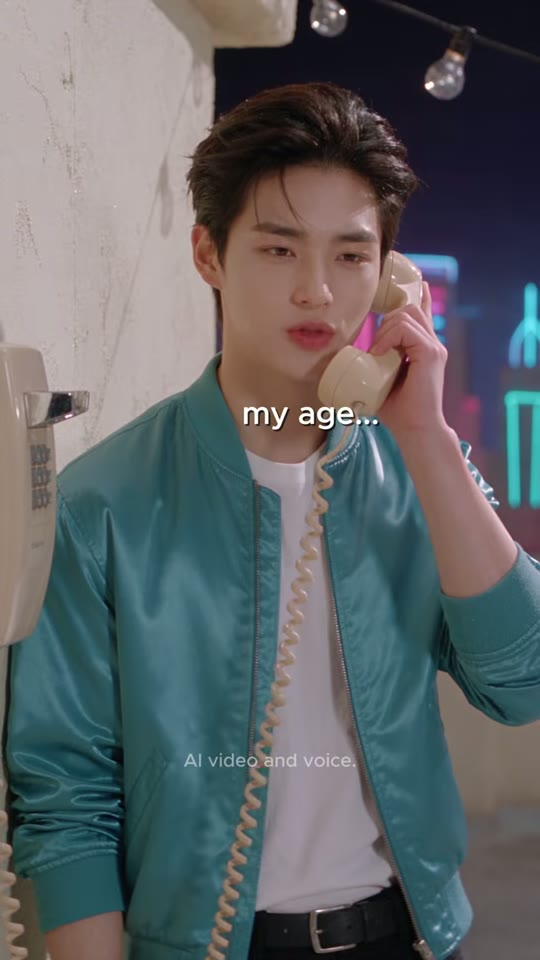
Neon Showbiz — EP.2 : I'm Twenty
조회수 1,259좋아요 7댓글 1업로드 2026-09-08길이 19.85초608x1080 · 24fps · 9:16 · AV1+AAC 44.1kHz stereo · -16.1 LUFS (LRA 8.3)
나이를 'I have twenty years'라고 말한 남동생이 팬클럽 소녀에게 '20년 경력 베테랑'으로 오해받아 접이식 의자까지 대접받다가 'I'm twenty'로 바로잡는 20초 AI 실사 영어 미니드라마.
🔥 떡상 이유
- 콩글리시 정조준(pain-point targeting): 한국인이 실제로 틀리는 'I have 20 years'를 소재로 → 타깃 시청자 '나도 저렇게 말할 뻔' 공감
- 리터럴 개그 리빌(visual literalism): '20년 경력'을 원로 대접(접이식 의자 펼쳐 권하기)으로 과장한 무대사 와이드 2.4초 — 소리 없이도 웃긴 장면
- 콜드 오픈: 0.25초 만에 'Noona —' 전화 대사, 인트로 없음 → 첫 1초 이탈 방지
- 가속 편집(accelerating montage): 2.8s→1.8s→1.0s→…→0.5s 초단컷('Then say —')으로 정답 직전 템포 최고조
- 빨강 오답 하이라이트('have'만 빨강) — 무음 시청자도 문제 단어 즉시 인지
- 러닝 개그 엔딩: 누나 '…That's what I meant' 0.4초 정적 뒤 오리발 → 시리즈 캐릭터 애착
- 보상 구조: 올바른 문장 → 팬클럽 서명(Sign here) → 의자가 접힘 = '맞게 말하면 상황이 정상화'
hook0~2.83s: 옥상 공중전화로 누나에게 'my age… twenty… what do I say?' — 오늘의 질문 제시
conflict2.83~10.88s: 누나의 오답 'I have twenty years'(빨강) → 그대로 선언 → 블론드 팬 '20년… 경력?' 경외 → 접이식 의자를 펼쳐 원로 대접
payoff10.88~16.79s: 'No, no! My age!' → 'Then say — I'm twenty' → 소년 복창 → '…Perfect. Sign here.'
loop16.79~19.85s: 누나 오리발 '…That's what I meant' → 무대사 와이드(서명+접힌 의자)로 하드컷 종료 → 다음 루프의 'Noona —'로 이어짐
⏱ 편집 리듬
컷 수12평균 컷 길이1.65최단/최장0.5 / 2.83분당 컷36.27해석EP.11보다 빠른 평균 1.65초. 오프닝 2.83s → 오답 구간 1.0~1.8s → 오해 CU 2.79s·리빌 와이드 2.42s로 개그를 '길게 보여주고' → 정정 구간 1.33/0.50/0.92/1.42s 초고속 핑퐁 → 해결 1.75s → 엔딩 1.29/1.77s. 대사가 거의 끊기지 않고(무음 구간 1개뿐) 컷이 화자 전환 0.1~0.2초 전에 들어감.
🎨 스타일 바이블
룩실사 시네마틱 AI 영상(Seedance 2.5 추정, #seedance25 #higgsfieldai). K-아이돌 뷰티 룩 + 80년대 네온 시티팝 밤 옥상. 인물 피부 광택·하이키.조명밤 장면인데도 인물은 하이키 소프트 정면광(뷰티라이트) + 네온 핑크/시안 림·배경광, 에디슨 전구 따뜻한 포인트. 소년 CU는 크림 벽 앞 균일 확산광(스튜디오 느낌). 누나 가게는 파스텔 네온 하이키.색#0B0A13 밤하늘 네이비 / #FF4FA0 네온 핑크 / #3FE0F0 네온 시안 / #2A9AA8 틸 새틴(소년) / #B8A8D8 라일락 새틴(블론드) / #E8DCC8 크림 회벽 / #8D8288 회색 자갈 바닥(추정 포함)렌즈와이드 24~28mm(옥상 WS, 좌측 벽 사선 원근), CU/ECU 50~85mm 상당, 얕은 심도, 카메라 대부분 고정 · 샷3 미세 핸드헬드 · 샷10 랙포커스.세트A) 밤 옥상: 좌측 크림 스터코 벽+베이지 벽걸이 공중전화(코일 코드), 머리 위 에디슨 전구 줄, 핑크·시안 네온 윤곽 도시 스카이라인, 은색 물탱크, 회색 자갈 바닥. B) 소년 CU 전용 크림 회벽 배경. C) 누나 가게(시리즈 공통): 파스텔 스낵 진열장, 네온 무지개, 크림 금전등록기, 동전 팁 유리병, 스테인리스 카운터.자막 스타일흰색 세미볼드 산세리프(Montserrat/Poppins SemiBold 유사, 추정) 약 32px@608폭, 박스 없음, 얇은 외곽선+부드러운 섀도. 화자 얼굴 옆/턱 아래 앵커(세로 43~75%). 틀린 단어 'have'만 빨강 #F52828, 정답 'I'm twenty'는 흰색. 애니메이션 없이 구 단위 즉시 교체. 누나 인용은 큰따옴표로 감쌈.워터마크하단 중앙 세로 약 79.5%(y≈858px) 작은 반투명 흰 글씨 'AI video and voice.'(약 13px) 상시. 'vkki' 로고는 의상(소년 재킷 가슴 큐빅, 블론드 봄버 자수, 누나 앞치마)에 삽입.
소년 (주인공 · 누나에게 전화하는 남동생) — 20세 전후 한국 남성 아이돌상. 흐트러진 다크브라운 텍스처 헤어, 청록(틸) 새틴 봄버 재킷 왼쪽 가슴에 핑크 큐빅 'vkki' 로고, 흰 크루넥 티, 검정 벨트·바지, 오른손목 검정 비즈 팔찌. 영어 초보 — 누나가 알려준 틀린 표현을 그대로 말했다가 문자 그대로 해석되는 역할. 표정은 순진·당황·깨달음 3단.
캐릭터 시트 프롬프트character reference sheet, front view, 3/4 view and side view, neutral light-grey studio background, a handsome Korean young man about 20 years old, tousled dark-brown textured idol hairstyle with soft bangs, fair dewy skin, wearing a glossy teal-turquoise satin bomber jacket with a pink rhinestone 'vkki' logo on his left chest, plain white crew-neck T-shirt, black belt, black trousers, black beaded bracelet on his right wrist, photorealistic cinematic live-action still, glossy K-drama idol beauty aesthetic, retro-pop 1980s Americana 'Neon Showbiz' world, soft high-key diffused key light with gentle rim light, pastel-saturated colors, smooth dewy skin, shallow depth of field, 35mm-50mm lens look, subtle film grain, vertical 9:16, 608x1080
동물 버전 캐릭터character reference sheet, front view, 3/4 view and side view, neutral light-grey studio background, Hamzzi, a photoreal anthropomorphic golden-orange Syrian hamster with a cream belly, chubby cheek pouches, big glossy black eyes, pink nose and tiny pink hands, a fluffy fur tuft on the head styled like an idol haircut, human-sized and upright, wearing the same glossy teal satin bomber jacket with pink rhinestone 'vkki' logo, white T-shirt, black trousers and a black beaded bracelet, innocent slightly clueless expression, photorealistic cinematic live-action still with photoreal anthropomorphic animal actors (real fur, real whiskers, human-sized, standing and gesturing like humans, expressive but not cartoon), same retro-pop 1980s Americana 'Neon Showbiz' world, soft high-key diffused key light with gentle rim light, pastel-saturated colors, shallow depth of field, 35mm-50mm lens look, subtle film grain, vertical 9:16, 608x1080
누나 (전화 코치 · 캔디숍 점원) — 20대 중반 한국 여성. 가운데 가르마 긴 웨이브 흑발, 골드 후프 귀걸이, 흰 차이나칼라 반팔 셔츠 + 데님블루 앞치마('vkki' 자수). 파스텔 스낵/캔디 진열장 + 핑크·시안 네온 무지개 사인이 걸린 가게 카운터(빈티지 크림색 금전등록기)에서 크림색 코일 수화기로 통화. 매 에피소드 틀린 표현을 자신만만하게 알려주고, 엔딩에서 '…That's what I meant'로 오리발 — 시리즈 고정 펀치라인 담당.
캐릭터 시트 프롬프트character reference sheet, front view, 3/4 view and side view, neutral light-grey studio background, a beautiful Korean woman in her mid-20s, long glossy wavy black hair with a center part, gold hoop earrings, white short-sleeve mandarin-collar shirt under a denim-blue bib apron with a tiny 'vkki' embroidery, holding a cream vintage telephone handset with a coiled cord to her ear, confident playful smile, photorealistic cinematic live-action still, glossy K-drama idol beauty aesthetic, retro-pop 1980s Americana 'Neon Showbiz' world, soft high-key diffused key light with gentle rim light, pastel-saturated colors, smooth dewy skin, shallow depth of field, 35mm-50mm lens look, subtle film grain, vertical 9:16, 608x1080
동물 버전 캐릭터character reference sheet, front view, 3/4 view and side view, neutral light-grey studio background, Noona-cat, an elegant photoreal anthropomorphic long-haired black cat (Persian mix) with glossy flowing black fur parted in the middle like long hair, warm amber eyes, small gold hoop earrings on her ears, wearing a white short-sleeve mandarin-collar shirt and a denim-blue bib apron with tiny 'vkki' embroidery, holding a cream coiled-cord telephone handset to her ear with her paw, confident sly smile, photorealistic cinematic live-action still with photoreal anthropomorphic animal actors (real fur, real whiskers, human-sized, standing and gesturing like humans, expressive but not cartoon), same retro-pop 1980s Americana 'Neon Showbiz' world, soft high-key diffused key light with gentle rim light, pastel-saturated colors, shallow depth of field, 35mm-50mm lens look, subtle film grain, vertical 9:16, 608x1080
블론드 팬 (팬클럽 회원 · 교정자) — 20세 전후 백인 여성. 긴 플래티넘 블론드 웨이브(가운데 가르마), 블루그레이 눈, 투명 라일락 원형 안경, 크리스털 드롭 귀걸이, 라일락 새틴 봄버('vkki' 톤온톤 자수), 흰 티, 네이비 플리츠 미니스커트, 흰 양말·스니커즈. 갈색 클립보드+파란 펜(팬클럽 가입서). 순수하게 감탄하다가 친절하게 정답을 알려주는 역할.
캐릭터 시트 프롬프트character reference sheet, front view, 3/4 view and side view, neutral light-grey studio background, a pretty young Caucasian woman about 20, long voluminous wavy platinum-blonde hair with a center part, blue-grey eyes, round transparent lilac-frame glasses, long crystal drop earrings, glossy lilac satin bomber jacket with tonal embroidered 'vkki' logo, white T-shirt, navy pleated mini skirt, white socks and white sneakers, holding a brown clipboard with a silver clip and a blue ballpoint pen, sweet earnest expression, photorealistic cinematic live-action still, glossy K-drama idol beauty aesthetic, retro-pop 1980s Americana 'Neon Showbiz' world, soft high-key diffused key light with gentle rim light, pastel-saturated colors, smooth dewy skin, shallow depth of field, 35mm-50mm lens look, subtle film grain, vertical 9:16, 608x1080
동물 버전 캐릭터character reference sheet, front view, 3/4 view and side view, neutral light-grey studio background, Lulu, a photoreal anthropomorphic cream-white Ragdoll cat with long fluffy fur, bright blue eyes, round transparent lilac-frame glasses, crystal drop earrings on her ears, glossy lilac satin bomber jacket with tonal 'vkki' embroidery, white T-shirt, navy pleated mini skirt, white socks and sneakers, holding a brown clipboard and blue pen, sweet earnest expression, photorealistic cinematic live-action still with photoreal anthropomorphic animal actors (real fur, real whiskers, human-sized, standing and gesturing like humans, expressive but not cartoon), same retro-pop 1980s Americana 'Neon Showbiz' world, soft high-key diffused key light with gentle rim light, pastel-saturated colors, shallow depth of field, 35mm-50mm lens look, subtle film grain, vertical 9:16, 608x1080
🔊 오디오
목소리AI 네이티브 음성(추정). 소년: 부드러운 20세 남성, 살짝 한국어 억양, 'Noona—'는 끌어 부름. 누나: 따뜻하고 확신에 찬 여성. 블론드: 밝은 미국식 20세 여성, 감탄·다정. 대사가 거의 끊김 없이 이어짐(무음 16.81~17.20 1회).BGM없음(추정) — 대사 사이 바닥 RMS -40~-48 dBFS, 연속 음악 없음. 샷5는 대사 없이 의자 효과음·환경음만.효과음8.80~9.60s 알루미늄 접이식 의자 펼치는 '철컥/끼익'(추정)
18.40s 펜 서명 사각(추정)
16.81~17.20s 의도적 무음 비트(오리발 직전)라우드니스-16.1TTS 팁'my age… twenty…'는 단어마다 0.2초 끊어 망설임 표현. 누나 'I have twenty years'는 have에 강세(틀린 확신). 소년 복창은 가슴 펴고 크게. 블론드 'Twenty years… of experience?'는 숨 들이쉬며 경외 톤, 문장 끝 올림. 정답 'I'm twenty'는 블론드가 또박또박 천천히, 소년은 차분하게. 'Sign here'는 밝게. 엔딩은 0.4초 쉬고 무표정 딜리버리. MiniMax 음성 speed 0.95~1.0.
BGM 생성 프롬프트(원본은 BGM 없음 — 동물판에서만 선택) dreamy 1980s city-pop night groove, 96 BPM, soft analog synth pads, muted slap bass, gentle drum machine, twinkly bell arps, neon rooftop mood, very sparse, no vocals, loopable 20 seconds, ducks under dialogue
🎬 컷별 완전 분해 (12개)
컷 1 · 훅: 시리즈 고정 '누나에게 전화' + 오늘의 질문(나이 말하기)
0.0s → 2.83s (2.83s)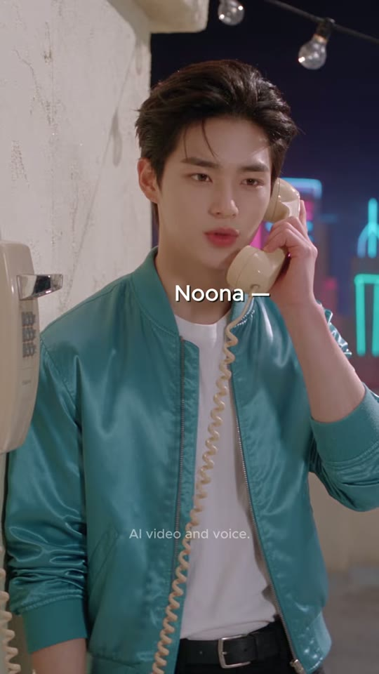

소년
벽걸이 전화
수화기
전구 줄
샷MS (허리 위)앵글아이레벨 정면카메라고정구도소년 중앙(얼굴 x≈50%, y≈17%), 오른손으로 수화기를 왼쪽 귀(화면 우측)에 댐. 좌측 끝 크림 벽에 베이지 벽걸이 공중전화(x 0~12%). 상단에 에디슨 전구 줄. 우측 배경 네온 스카이라인(시안·핑크) 블러. 코일 코드가 가슴 앞으로 늘어짐.동작수화기를 귀에 대고 화면 좌측 밖을 흘끗 보며 입술 삐죽, 어리둥절 → 'what do I say?'에서 눈 동그랗게.대사소년: "Noona— my age… twenty… what do I say?" (자동자막은 'Do not'으로 오인식)화면 자막"Noona —"(0.00~0.95) → "my age..."(0.95~1.45) → "twenty..."(1.45~1.95) → "what do I say?"(1.95~2.83) · 흰색 · 세로 약 44%, 가로 약 56%(얼굴 옆)들어오는 전환영상 시작 콜드오픈(0.25초에 첫 발화, 인트로 없음)효과음/음악BGM 없음(추정), 야외 룸톤역할훅: 시리즈 고정 '누나에게 전화' + 오늘의 질문(나이 말하기)
1순위
minimax-h3대사 립싱크+음성 동시 생성, 무료 — 팀 기본
2순위
kling-v3-omni레퍼런스 캐릭터 일관성 + 립싱크 안정
3순위
seedance-2-5원본 채널 #seedance25 사용 → 룩 최근접(추정)
① 이미지 프롬프트 (원본 클론)Vertical 9:16 medium shot, eye-level frontal, a handsome Korean young man about 20 years old, tousled dark-brown textured idol hairstyle with soft bangs, fair dewy skin, wearing a glossy teal-turquoise satin bomber jacket with a pink rhinestone 'vkki' logo on his left chest, plain white crew-neck T-shirt, black belt, black trousers, black beaded bracelet on his right wrist, standing on a night rooftop set: a cream stucco parapet wall on the left with a beige wall-mounted payphone and coiled cord, a string of warm Edison bulbs overhead, a glowing pink and cyan neon-outline city skyline behind a low parapet, deep navy night sky, pale grey gravel rooftop floor, holding a cream coiled-cord payphone handset to his left ear with his right hand, cord hanging across his chest, glancing off-screen left with a puzzled pout, payphone on the stucco wall at the left edge, photorealistic cinematic live-action still, glossy K-drama idol beauty aesthetic, retro-pop 1980s Americana 'Neon Showbiz' world, soft high-key diffused key light with gentle rim light, pastel-saturated colors, smooth dewy skin, shallow depth of field, 35mm-50mm lens look, subtle film grain, vertical 9:16, 608x1080
② 영상 프롬프트 (원본 클론)2.83 s, static camera. He holds the handset, glances aside, pouts, then widens his eyes on the question. Lip-sync, soft young male voice, light Korean accent, halting: "Noona... my age... twenty... what do I say?" Quiet night ambience, no music.
③ 동물 버전 이미지 프롬프트Vertical 9:16 medium shot, eye-level frontal, Hamzzi, a photoreal anthropomorphic golden-orange Syrian hamster with a cream belly, chubby cheek pouches, big glossy black eyes, pink nose and tiny pink hands, a fluffy fur tuft on the head styled like an idol haircut, human-sized and upright, wearing the same glossy teal satin bomber jacket with pink rhinestone 'vkki' logo, white T-shirt, black trousers and a black beaded bracelet, standing on a night rooftop set: a cream stucco parapet wall on the left with a beige wall-mounted payphone and coiled cord, a string of warm Edison bulbs overhead, a glowing pink and cyan neon-outline city skyline behind a low parapet, deep navy night sky, pale grey gravel rooftop floor, holding a cream coiled-cord payphone handset to his ear with a tiny paw, cord across his chest, puzzled pout with puffed cheeks, photorealistic cinematic live-action still with photoreal anthropomorphic animal actors (real fur, real whiskers, human-sized, standing and gesturing like humans, expressive but not cartoon), same retro-pop 1980s Americana 'Neon Showbiz' world, soft high-key diffused key light with gentle rim light, pastel-saturated colors, shallow depth of field, 35mm-50mm lens look, subtle film grain, vertical 9:16, 608x1080
④ 동물 버전 영상 프롬프트2.83 s, static. Hamzzi holds the handset, whiskers twitch, cheeks puff: "Noona... my age... twenty... what do I say?" Lip-sync, small cute voice. No music.
네거티브extra fingers, fused or deformed hands, distorted face, asymmetrical eyes, warped or misspelled logo, random text, burned-in subtitles, captions, watermark, UI, blurry, low resolution, over-sharpened, plastic CGI skin, cartoon, anime, 3D toy look, heavy makeup, horizontal frame, letterbox bars, flicker, jitter, morphing props, duplicate characters, extra people in background, mouth out of sync || ANIMAL: extra fingers, fused or deformed hands, distorted face, asymmetrical eyes, warped or misspelled logo, random text, burned-in subtitles, captions, watermark, UI, blurry, low resolution, over-sharpened, plastic CGI skin, cartoon, anime, 3D toy look, heavy makeup, horizontal frame, letterbox bars, flicker, jitter, morphing props, duplicate characters, extra people in background, mouth out of sync, human face, human skin, hybrid human-animal face, realistic human hands on the animal, costume mascot suit, plush toy, stiff taxidermy look, uncanny fur
컷 2 · 오답 제시 — 나이에 have를 쓰는 콩글리시(빨강 각인)
2.83s → 4.63s (1.79s)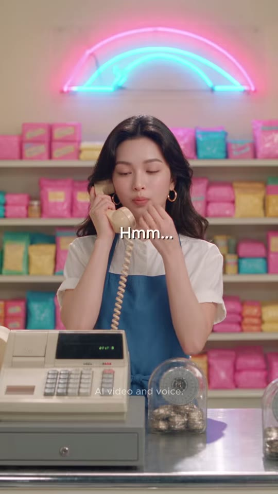

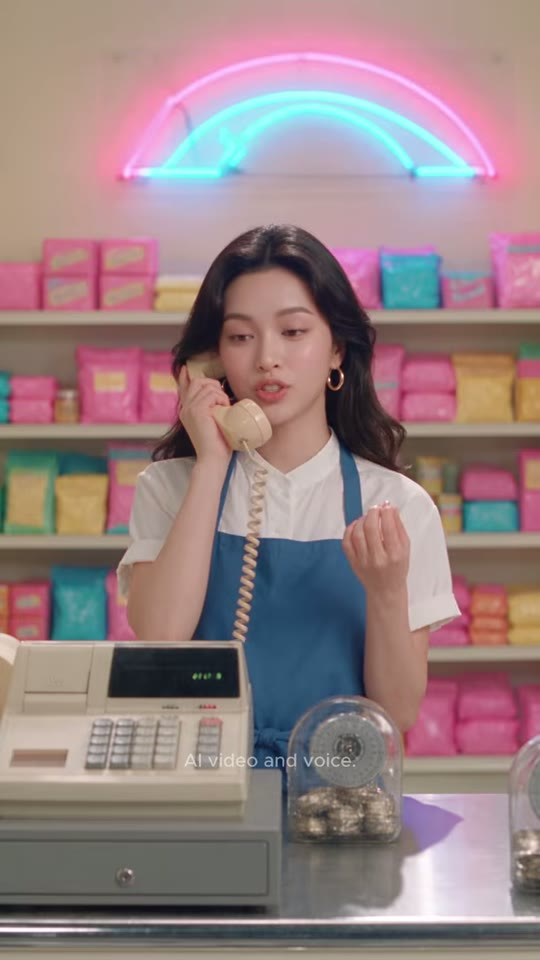
누나
금전등록기
팁 유리병
네온 사인
샷MS (허리 위)앵글아이레벨 정면카메라고정구도누나 중앙(얼굴 x≈50%, y≈33%), 전경 하단-좌 크림 금전등록기, 하단-중앙 동전 팁 유리병, 스테인리스 카운터. 상단 핑크·시안 네온 무지개(0~15%). 파스텔 진열장 배경.동작a: 눈 감고 'Hmm…' 생각 → m: 오른손 손가락을 모아 세듯 제스처하며 자신만만하게 틀린 문장 → z: 만족스러운 표정으로 손가락 제스처 유지.대사누나: "Mhm… 'I have twenty years.'"화면 자막"Hmm..."(2.95~3.40) → 「"I have twenty years"」(3.40~4.62, 큰따옴표까지 화면에 표기) · 'have' = 빨강 #F52828 · 세로 약 47%들어오는 전환하드컷(화자 전환, 컷 0.13초 뒤 발화)효과음/음악BGM 없음역할오답 제시 — 나이에 have를 쓰는 콩글리시(빨강 각인)
1순위
minimax-h3대사 립싱크+음성 동시 생성, 무료 — 팀 기본
2순위
kling-v3-omni레퍼런스 캐릭터 일관성 + 립싱크 안정
3순위
seedance-2-5원본 채널 #seedance25 사용 → 룩 최근접(추정)
① 이미지 프롬프트 (원본 클론)Vertical 9:16 medium shot, eye-level frontal, a beautiful Korean woman in her mid-20s, long glossy wavy black hair with a center part, gold hoop earrings, white short-sleeve mandarin-collar shirt under a denim-blue bib apron with a tiny 'vkki' embroidery, holding a cream vintage telephone handset with a coiled cord to her ear, standing behind a counter in a pastel candy-and-snack shop: shelves stacked with pink, teal, yellow and mint snack bags, a pink-and-cyan neon rainbow tube sign on the wall above, a vintage cream cash register and a glass tip jar full of coins on a stainless counter in the foreground, eyes closed thinking, her right hand raised with fingertips pinched together as if counting, centered, photorealistic cinematic live-action still, glossy K-drama idol beauty aesthetic, retro-pop 1980s Americana 'Neon Showbiz' world, soft high-key diffused key light with gentle rim light, pastel-saturated colors, smooth dewy skin, shallow depth of field, 35mm-50mm lens look, subtle film grain, vertical 9:16, 608x1080
② 영상 프롬프트 (원본 클론)1.79 s, static. She hums thoughtfully with eyes closed, then opens them and says confidently while gesturing with her fingers: "Mhm... I have twenty years." Lip-sync, warm confident female voice. No music.
③ 동물 버전 이미지 프롬프트Vertical 9:16 medium shot, eye-level frontal, Noona-cat, an elegant photoreal anthropomorphic long-haired black cat (Persian mix) with glossy flowing black fur parted in the middle like long hair, warm amber eyes, small gold hoop earrings on her ears, wearing a white short-sleeve mandarin-collar shirt and a denim-blue bib apron with tiny 'vkki' embroidery, holding a cream coiled-cord telephone handset to her ear with her paw, behind a counter in a pastel candy-and-snack shop: shelves stacked with pink, teal, yellow and mint snack bags, a pink-and-cyan neon rainbow tube sign on the wall above, a vintage cream cash register and a glass tip jar full of coins on a stainless counter in the foreground, eyes closed thinking, one paw raised as if counting, centered, photorealistic cinematic live-action still with photoreal anthropomorphic animal actors (real fur, real whiskers, human-sized, standing and gesturing like humans, expressive but not cartoon), same retro-pop 1980s Americana 'Neon Showbiz' world, soft high-key diffused key light with gentle rim light, pastel-saturated colors, shallow depth of field, 35mm-50mm lens look, subtle film grain, vertical 9:16, 608x1080
④ 동물 버전 영상 프롬프트1.79 s, static. Noona-cat hums with eyes closed, tail flick, then declares: "Mhm... I have twenty years." Lip-sync, warm confident female voice. No music.
네거티브extra fingers, fused or deformed hands, distorted face, asymmetrical eyes, warped or misspelled logo, random text, burned-in subtitles, captions, watermark, UI, blurry, low resolution, over-sharpened, plastic CGI skin, cartoon, anime, 3D toy look, heavy makeup, horizontal frame, letterbox bars, flicker, jitter, morphing props, duplicate characters, extra people in background, mouth out of sync || ANIMAL: extra fingers, fused or deformed hands, distorted face, asymmetrical eyes, warped or misspelled logo, random text, burned-in subtitles, captions, watermark, UI, blurry, low resolution, over-sharpened, plastic CGI skin, cartoon, anime, 3D toy look, heavy makeup, horizontal frame, letterbox bars, flicker, jitter, morphing props, duplicate characters, extra people in background, mouth out of sync, human face, human skin, hybrid human-animal face, realistic human hands on the animal, costume mascot suit, plush toy, stiff taxidermy look, uncanny fur
컷 3 · 오답 실행 — 자신만만한 틀린 선언(코미디 셋업)
4.63s → 5.67s (1.04s)
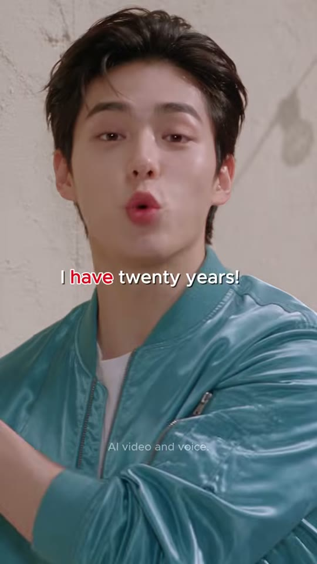
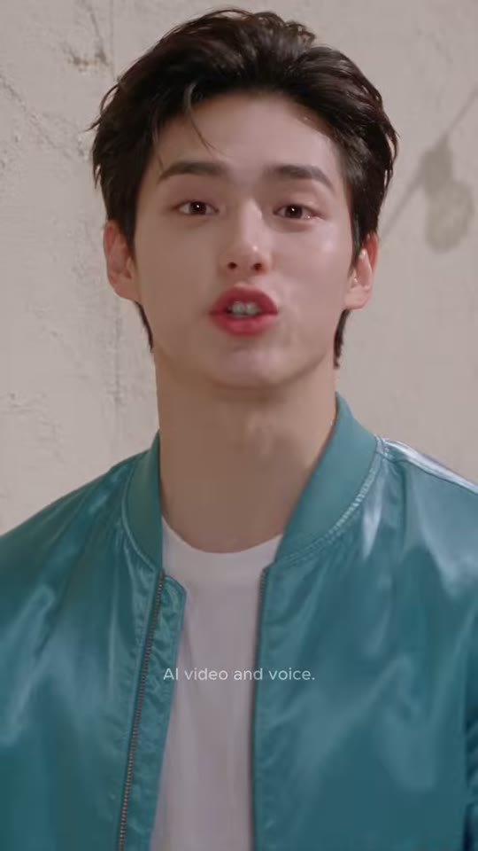
소년
수화기(a)
샷CU (머리~가슴 상단)앵글아이레벨, 약간 로우(5°)카메라미세 핸드헬드 + 인물이 카메라 쪽으로 기울며 들어옴(a 프레임 모션블러)구도소년 얼굴이 프레임 상단 60% 차지(얼굴 중심 x≈45%, y≈22%). a: 수화기를 든 채 고개를 기울이고 눈 감음 → m/z: 수화기가 프레임 밖으로 빠지고 정면 카메라 직시. 배경 크림 회벽.동작눈을 감고 고개를 까딱하며 들은 문장을 되뇌다가 카메라(블론드 쪽)를 향해 가슴 펴고 자신있게 입술 모아 선언.대사소년: "I have twenty years!"화면 자막"I have twenty years!"(4.75~5.67) · 'have' 빨강 #F52828 · 세로 약 49%들어오는 전환하드컷(전화→대면 공간 전환, 컷 0.1초 뒤 발화)효과음/음악BGM 없음역할오답 실행 — 자신만만한 틀린 선언(코미디 셋업)
1순위
minimax-h3대사 립싱크+음성 동시 생성, 무료 — 팀 기본
2순위
kling-v3-omni레퍼런스 캐릭터 일관성 + 립싱크 안정
3순위
seedance-2-5원본 채널 #seedance25 사용 → 룩 최근접(추정)
① 이미지 프롬프트 (원본 클론)Vertical 9:16 close-up, eye-level with slight 5-degree low angle, a handsome Korean young man about 20 years old, tousled dark-brown textured idol hairstyle with soft bangs, fair dewy skin, wearing a glossy teal-turquoise satin bomber jacket with a pink rhinestone 'vkki' logo on his left chest, plain white crew-neck T-shirt, black belt, black trousers, black beaded bracelet on his right wrist, tilting his head with eyes closed, cream handset still near his cheek, a plain cream plaster wall with faint soft diagonal shadows behind him, photorealistic cinematic live-action still, glossy K-drama idol beauty aesthetic, retro-pop 1980s Americana 'Neon Showbiz' world, soft high-key diffused key light with gentle rim light, pastel-saturated colors, smooth dewy skin, shallow depth of field, 35mm-50mm lens look, subtle film grain, vertical 9:16, 608x1080
② 영상 프롬프트 (원본 클론)1.04 s, slight handheld. He swings his head from the handset toward the lens, puffs his chest and announces proudly with pursed lips: "I have twenty years!" Lip-sync, young male voice, confident. No music.
③ 동물 버전 이미지 프롬프트Vertical 9:16 close-up, eye-level slight low angle, Hamzzi, a photoreal anthropomorphic golden-orange Syrian hamster with a cream belly, chubby cheek pouches, big glossy black eyes, pink nose and tiny pink hands, a fluffy fur tuft on the head styled like an idol haircut, human-sized and upright, wearing the same glossy teal satin bomber jacket with pink rhinestone 'vkki' logo, white T-shirt, black trousers and a black beaded bracelet, head tilted, eyes closed, handset near his cheek, a plain cream plaster wall with faint soft diagonal shadows behind him, photorealistic cinematic live-action still with photoreal anthropomorphic animal actors (real fur, real whiskers, human-sized, standing and gesturing like humans, expressive but not cartoon), same retro-pop 1980s Americana 'Neon Showbiz' world, soft high-key diffused key light with gentle rim light, pastel-saturated colors, shallow depth of field, 35mm-50mm lens look, subtle film grain, vertical 9:16, 608x1080
④ 동물 버전 영상 프롬프트1.04 s, slight handheld. Hamzzi swings toward the lens, puffs his chest and cheeks: "I have twenty years!" Lip-sync, small proud voice. No music.
네거티브extra fingers, fused or deformed hands, distorted face, asymmetrical eyes, warped or misspelled logo, random text, burned-in subtitles, captions, watermark, UI, blurry, low resolution, over-sharpened, plastic CGI skin, cartoon, anime, 3D toy look, heavy makeup, horizontal frame, letterbox bars, flicker, jitter, morphing props, duplicate characters, extra people in background, mouth out of sync || ANIMAL: extra fingers, fused or deformed hands, distorted face, asymmetrical eyes, warped or misspelled logo, random text, burned-in subtitles, captions, watermark, UI, blurry, low resolution, over-sharpened, plastic CGI skin, cartoon, anime, 3D toy look, heavy makeup, horizontal frame, letterbox bars, flicker, jitter, morphing props, duplicate characters, extra people in background, mouth out of sync, human face, human skin, hybrid human-animal face, realistic human hands on the animal, costume mascot suit, plush toy, stiff taxidermy look, uncanny fur
컷 4 · 오해 발생 — 'have 20 years' = '20년 경력'으로 받아들
5.67s → 8.46s (2.79s)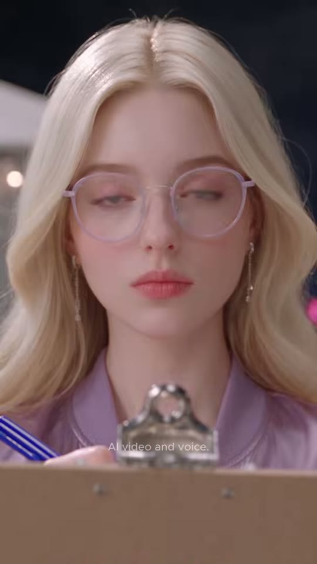
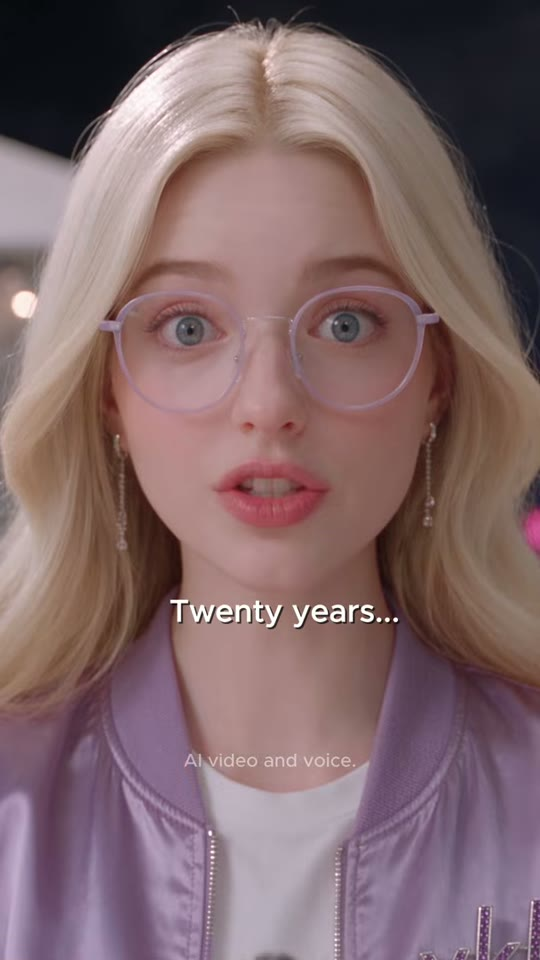

블론드 팬
클립보드(전경)
안경
샷CU (얼굴~가슴, 전경 클립보드)앵글약간 로우앵글(클립보드 너머에서 올려봄)카메라고정 + 아주 느린 푸시인(추정)구도블론드 얼굴 프레임 상단 중앙(눈 y≈38%). 하단 전경 25%를 갈색 클립보드+은색 집게+파란 펜이 블러로 가림(a·m). 배경 어두운 밤 옥상 블러. z에서 클립보드가 내려가고 라일락 봄버 가슴이 보임.동작a: 눈을 내리깔고 클립보드에 적는 중 → m: 안경 너머로 눈이 휘둥그레(경외) 'Twenty years…' → z: 입을 벌린 채 존경의 표정 'of experience?'대사블론드 팬: "Twenty years… of experience?"화면 자막"Twenty years..."(6.40~7.30) → "of experience?"(7.30~8.45) · 흰색 · 세로 약 64~66%(턱 아래)들어오는 전환하드컷(화자 전환)효과음/음악BGM 없음. 6.0~6.4 짧은 정적역할오해 발생 — 'have 20 years' = '20년 경력'으로 받아들임(리터럴 해석)
1순위
seedance-2-5초근접 미세표정(눈 커짐·입모양) 최강, 원본 모델 추정
2순위
minimax-h3립싱크 대사 + 무료
3순위
kling-v3-omni입모양 정확도 백업
① 이미지 프롬프트 (원본 클론)Vertical 9:16 close-up, slight low angle from behind a blurred brown clipboard with a silver clip and blue pen in the bottom foreground, a pretty young Caucasian woman about 20, long voluminous wavy platinum-blonde hair with a center part, blue-grey eyes, round transparent lilac-frame glasses, long crystal drop earrings, glossy lilac satin bomber jacket with tonal embroidered 'vkki' logo, white T-shirt, navy pleated mini skirt, white socks and white sneakers, holding a brown clipboard with a silver clip and a blue ballpoint pen, eyes lowered as she writes, blurred night rooftop background with a silver metal water tank at the left, pink and cyan neon skyline and warm string lights, deep navy sky, photorealistic cinematic live-action still, glossy K-drama idol beauty aesthetic, retro-pop 1980s Americana 'Neon Showbiz' world, soft high-key diffused key light with gentle rim light, pastel-saturated colors, smooth dewy skin, shallow depth of field, 35mm-50mm lens look, subtle film grain, vertical 9:16, 608x1080
② 영상 프롬프트 (원본 클론)2.79 s, static with very slow push-in. She looks up from the clipboard, her eyes go huge with awe behind the glasses. Lip-sync, bright young American female voice, amazed: "Twenty years... of experience?" No music.
③ 동물 버전 이미지 프롬프트Vertical 9:16 close-up, slight low angle from behind a blurred clipboard in the bottom foreground, Lulu, a photoreal anthropomorphic cream-white Ragdoll cat with long fluffy fur, bright blue eyes, round transparent lilac-frame glasses, crystal drop earrings on her ears, glossy lilac satin bomber jacket with tonal 'vkki' embroidery, white T-shirt, navy pleated mini skirt, white socks and sneakers, holding a brown clipboard and blue pen, eyes lowered as she writes, blurred night rooftop background with a silver metal water tank at the left, pink and cyan neon skyline and warm string lights, deep navy sky, photorealistic cinematic live-action still with photoreal anthropomorphic animal actors (real fur, real whiskers, human-sized, standing and gesturing like humans, expressive but not cartoon), same retro-pop 1980s Americana 'Neon Showbiz' world, soft high-key diffused key light with gentle rim light, pastel-saturated colors, shallow depth of field, 35mm-50mm lens look, subtle film grain, vertical 9:16, 608x1080
④ 동물 버전 영상 프롬프트2.79 s, static, slow push-in. Lulu looks up, pupils dilate huge behind the glasses, ears forward: "Twenty years... of experience?" Lip-sync, bright amazed female voice. No music.
네거티브extra fingers, fused or deformed hands, distorted face, asymmetrical eyes, warped or misspelled logo, random text, burned-in subtitles, captions, watermark, UI, blurry, low resolution, over-sharpened, plastic CGI skin, cartoon, anime, 3D toy look, heavy makeup, horizontal frame, letterbox bars, flicker, jitter, morphing props, duplicate characters, extra people in background, mouth out of sync || ANIMAL: extra fingers, fused or deformed hands, distorted face, asymmetrical eyes, warped or misspelled logo, random text, burned-in subtitles, captions, watermark, UI, blurry, low resolution, over-sharpened, plastic CGI skin, cartoon, anime, 3D toy look, heavy makeup, horizontal frame, letterbox bars, flicker, jitter, morphing props, duplicate characters, extra people in background, mouth out of sync, human face, human skin, hybrid human-animal face, realistic human hands on the animal, costume mascot suit, plush toy, stiff taxidermy look, uncanny fur
컷 5 · 시각 개그 리빌 — '20년 베테랑'을 원로 대접(의자 권하기)으로 과장
8.46s → 10.88s (2.42s)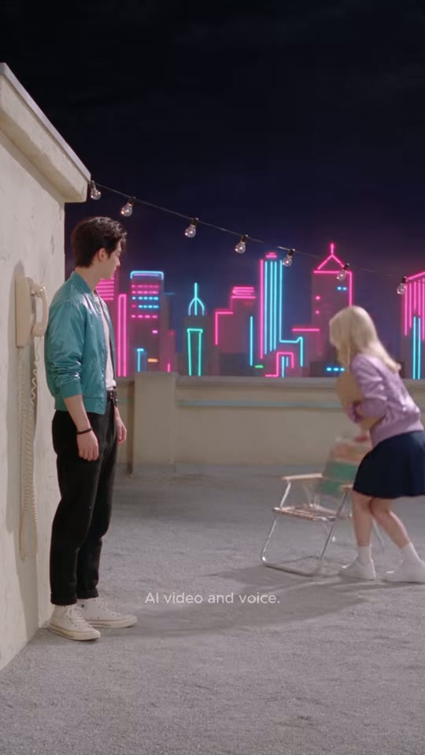
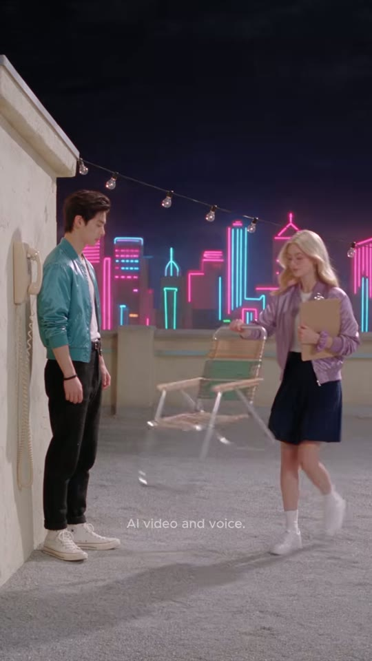
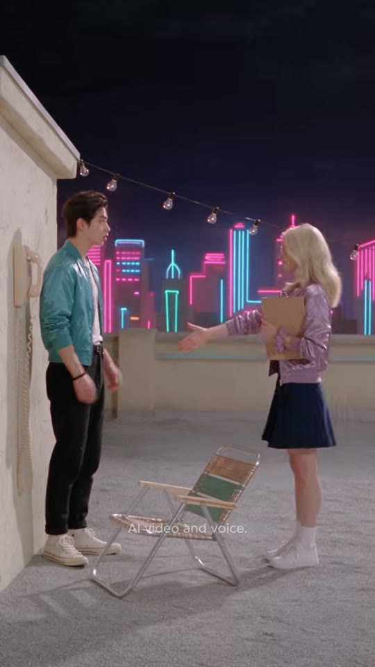
소년
블론드 팬
접이식 의자
네온 스카이라인
샷WS (전신, 옥상 세트)앵글아이레벨, 약간 하이(카메라 가슴 높이), 좌측 벽을 따라 사선 원근카메라고정구도좌측 크림 벽이 소실점으로 사선. 소년 좌측(x≈3~25%) 벽 전화 옆에 차렷 자세로 서서 오른쪽을 봄. 블론드는 우측(x≈55~85%)에서 허리 숙여 접이식 의자를 펼쳐 소년 쪽으로 밀어줌. 의자 x≈25~55%, y≈45~75%. 상단 네온 스카이라인+전구 줄, 하단 50% 회색 자갈 바닥 여백.동작블론드가 접힌 알루미늄 의자를 철컥 펼쳐 소년 앞에 놓고, 한 손을 펴서 '앉으세요(어르신)' 제스처 → 소년은 벽에 붙어 굳은 채 바라봄. 클립보드는 블론드 왼팔에.대사(대사 없음)화면 자막자막 없음(8.46~10.88)들어오는 전환하드컷 CU→WS 스케일 점프(리빌)효과음/음악접이식 의자 펼치는 '철컥/끼익' 금속음(추정, 8.8~9.6s), 대사 없는 2.4초(RMS -33~-44 dB)역할시각 개그 리빌 — '20년 베테랑'을 원로 대접(의자 권하기)으로 과장
1순위
kling-v3접이식 의자 펼치기/접기 같은 소품 물리 동작 안정
2순위
veo-3-1와이드 환경+효과음 동시 생성
3순위
hailuo-2-3과장된 코믹 동작 템포
① 이미지 프롬프트 (원본 클론)Vertical 9:16 wide shot, eye-level slightly high, night rooftop set: a cream stucco parapet wall on the left with a beige wall-mounted payphone and coiled cord, a string of warm Edison bulbs overhead, a glowing pink and cyan neon-outline city skyline behind a low parapet, deep navy night sky, pale grey gravel rooftop floor, the cream wall receding diagonally on the left, a handsome Korean young man about 20 years old, tousled dark-brown textured idol hairstyle with soft bangs, fair dewy skin, wearing a glossy teal-turquoise satin bomber jacket with a pink rhinestone 'vkki' logo on his left chest, plain white crew-neck T-shirt, black belt, black trousers, black beaded bracelet on his right wrist standing stiffly against the wall next to the payphone at the left, a pretty young Caucasian woman about 20, long voluminous wavy platinum-blonde hair with a center part, blue-grey eyes, round transparent lilac-frame glasses, long crystal drop earrings, glossy lilac satin bomber jacket with tonal embroidered 'vkki' logo, white T-shirt, navy pleated mini skirt, white socks and white sneakers, holding a brown clipboard with a silver clip and a blue ballpoint pen on the right bending forward to unfold a vintage aluminum folding lawn chair with green-and-white woven webbing and pushing it toward him, lots of grey gravel floor in the lower half, photorealistic cinematic live-action still, glossy K-drama idol beauty aesthetic, retro-pop 1980s Americana 'Neon Showbiz' world, soft high-key diffused key light with gentle rim light, pastel-saturated colors, smooth dewy skin, shallow depth of field, 35mm-50mm lens look, subtle film grain, vertical 9:16, 608x1080
② 영상 프롬프트 (원본 클론)2.42 s, locked-off wide. The girl snaps open the folding lawn chair with a metallic clack, sets it down in front of him and gestures with an open palm, respectfully inviting him to sit like an elder. He stands frozen against the wall. No dialogue, chair clack SFX, night ambience.
③ 동물 버전 이미지 프롬프트Vertical 9:16 wide shot, eye-level slightly high, night rooftop set: a cream stucco parapet wall on the left with a beige wall-mounted payphone and coiled cord, a string of warm Edison bulbs overhead, a glowing pink and cyan neon-outline city skyline behind a low parapet, deep navy night sky, pale grey gravel rooftop floor, Hamzzi, a photoreal anthropomorphic golden-orange Syrian hamster with a cream belly, chubby cheek pouches, big glossy black eyes, pink nose and tiny pink hands, a fluffy fur tuft on the head styled like an idol haircut, human-sized and upright, wearing the same glossy teal satin bomber jacket with pink rhinestone 'vkki' logo, white T-shirt, black trousers and a black beaded bracelet standing stiffly against the wall next to the payphone at the left, Lulu, a photoreal anthropomorphic cream-white Ragdoll cat with long fluffy fur, bright blue eyes, round transparent lilac-frame glasses, crystal drop earrings on her ears, glossy lilac satin bomber jacket with tonal 'vkki' embroidery, white T-shirt, navy pleated mini skirt, white socks and sneakers, holding a brown clipboard and blue pen on the right bending to unfold a vintage aluminum folding lawn chair with green-and-white woven webbing and pushing it toward him, grey gravel floor in the lower half, photorealistic cinematic live-action still with photoreal anthropomorphic animal actors (real fur, real whiskers, human-sized, standing and gesturing like humans, expressive but not cartoon), same retro-pop 1980s Americana 'Neon Showbiz' world, soft high-key diffused key light with gentle rim light, pastel-saturated colors, shallow depth of field, 35mm-50mm lens look, subtle film grain, vertical 9:16, 608x1080
④ 동물 버전 영상 프롬프트2.42 s, locked-off wide. Lulu snaps open the lawn chair with a clack and bows, gesturing for Hamzzi to sit like a respected elder; Hamzzi freezes, ears flat. No dialogue, chair clack SFX.
네거티브extra fingers, fused or deformed hands, distorted face, asymmetrical eyes, warped or misspelled logo, random text, burned-in subtitles, captions, watermark, UI, blurry, low resolution, over-sharpened, plastic CGI skin, cartoon, anime, 3D toy look, heavy makeup, horizontal frame, letterbox bars, flicker, jitter, morphing props, duplicate characters, extra people in background, mouth out of sync || ANIMAL: extra fingers, fused or deformed hands, distorted face, asymmetrical eyes, warped or misspelled logo, random text, burned-in subtitles, captions, watermark, UI, blurry, low resolution, over-sharpened, plastic CGI skin, cartoon, anime, 3D toy look, heavy makeup, horizontal frame, letterbox bars, flicker, jitter, morphing props, duplicate characters, extra people in background, mouth out of sync, human face, human skin, hybrid human-animal face, realistic human hands on the animal, costume mascot suit, plush toy, stiff taxidermy look, uncanny fur
컷 6 · 리액션/정정 요구
10.88s → 12.21s (1.33s)

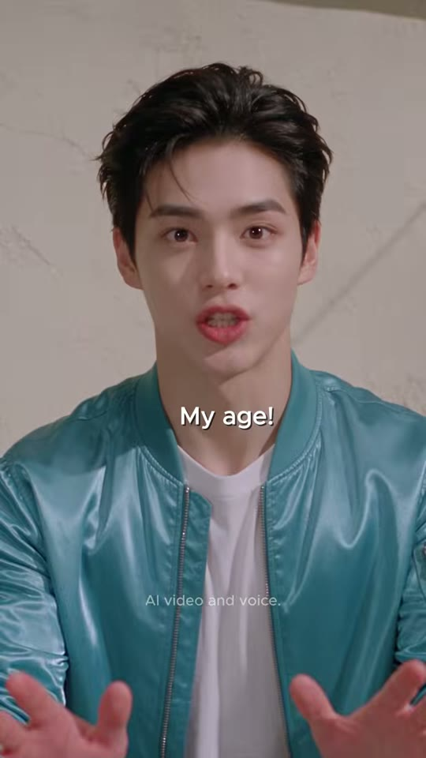
소년
양손(전경)
샷MCU (가슴 위, 손 전경)앵글아이레벨 정면, 카메라 직시(블론드 POV)카메라고정구도소년 중앙(얼굴 x≈50%, y≈20%). 양 손바닥이 카메라 쪽으로 크게 전경(하단 50~95%)에서 흔들림(모션블러). 배경 크림 회벽.동작입을 동그랗게 'No, no!' → 양손바닥을 카메라로 내밀어 좌우로 흔들며 'My age!' 다급하게 해명.대사소년: "No, no! My age!"화면 자막"No, no!"(10.90~11.40) → "My age!"(11.40~12.25) · 흰색 · 세로 약 53~55%들어오는 전환하드컷(리액션)효과음/음악BGM 없음역할리액션/정정 요구
1순위
minimax-h3대사 립싱크+음성 동시 생성, 무료 — 팀 기본
2순위
kling-v3-omni레퍼런스 캐릭터 일관성 + 립싱크 안정
3순위
seedance-2-5원본 채널 #seedance25 사용 → 룩 최근접(추정)
① 이미지 프롬프트 (원본 클론)Vertical 9:16 medium close-up, eye-level frontal POV, a handsome Korean young man about 20 years old, tousled dark-brown textured idol hairstyle with soft bangs, fair dewy skin, wearing a glossy teal-turquoise satin bomber jacket with a pink rhinestone 'vkki' logo on his left chest, plain white crew-neck T-shirt, black belt, black trousers, black beaded bracelet on his right wrist, both palms pushed toward the lens in a 'no, no' gesture, hands large and slightly motion-blurred in the foreground, mouth in an O shape, a plain cream plaster wall with faint soft diagonal shadows behind him, photorealistic cinematic live-action still, glossy K-drama idol beauty aesthetic, retro-pop 1980s Americana 'Neon Showbiz' world, soft high-key diffused key light with gentle rim light, pastel-saturated colors, smooth dewy skin, shallow depth of field, 35mm-50mm lens look, subtle film grain, vertical 9:16, 608x1080
② 영상 프롬프트 (원본 클론)1.33 s, static. He waves both open palms at the camera, flustered. Lip-sync, young male voice, urgent: "No, no! My age!" No music.
③ 동물 버전 이미지 프롬프트Vertical 9:16 medium close-up, frontal POV, Hamzzi, a photoreal anthropomorphic golden-orange Syrian hamster with a cream belly, chubby cheek pouches, big glossy black eyes, pink nose and tiny pink hands, a fluffy fur tuft on the head styled like an idol haircut, human-sized and upright, wearing the same glossy teal satin bomber jacket with pink rhinestone 'vkki' logo, white T-shirt, black trousers and a black beaded bracelet, both tiny pink paws pushed toward the lens waving 'no', mouth in an O shape, a plain cream plaster wall with faint soft diagonal shadows behind him, photorealistic cinematic live-action still with photoreal anthropomorphic animal actors (real fur, real whiskers, human-sized, standing and gesturing like humans, expressive but not cartoon), same retro-pop 1980s Americana 'Neon Showbiz' world, soft high-key diffused key light with gentle rim light, pastel-saturated colors, shallow depth of field, 35mm-50mm lens look, subtle film grain, vertical 9:16, 608x1080
④ 동물 버전 영상 프롬프트1.33 s, static. Hamzzi waves both paws frantically, cheeks wobbling: "No, no! My age!" Lip-sync, small urgent voice. No music.
네거티브extra fingers, fused or deformed hands, distorted face, asymmetrical eyes, warped or misspelled logo, random text, burned-in subtitles, captions, watermark, UI, blurry, low resolution, over-sharpened, plastic CGI skin, cartoon, anime, 3D toy look, heavy makeup, horizontal frame, letterbox bars, flicker, jitter, morphing props, duplicate characters, extra people in background, mouth out of sync || ANIMAL: extra fingers, fused or deformed hands, distorted face, asymmetrical eyes, warped or misspelled logo, random text, burned-in subtitles, captions, watermark, UI, blurry, low resolution, over-sharpened, plastic CGI skin, cartoon, anime, 3D toy look, heavy makeup, horizontal frame, letterbox bars, flicker, jitter, morphing props, duplicate characters, extra people in background, mouth out of sync, human face, human skin, hybrid human-animal face, realistic human hands on the animal, costume mascot suit, plush toy, stiff taxidermy look, uncanny fur
컷 7 · 교정 셋업('Then say —'로 끊어 다음 컷 기대)
12.21s → 12.71s (0.5s)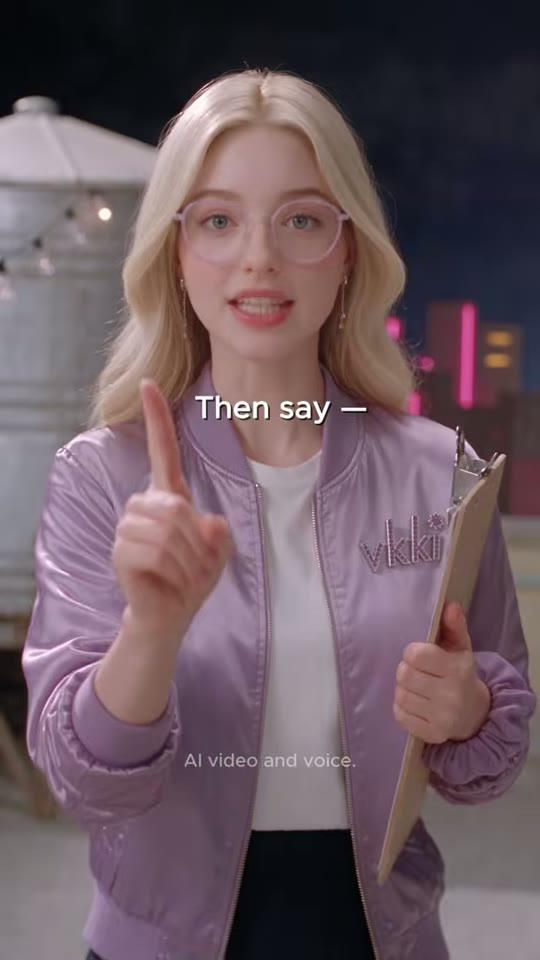

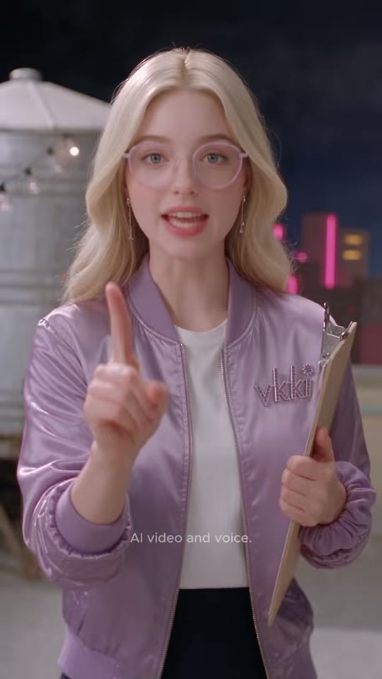
블론드 팬
검지
클립보드
샷MS (허리 위)앵글아이레벨 정면카메라고정구도블론드 중앙(얼굴 x≈50%, y≈18%), 오른손 검지를 세워 얼굴 옆(x≈30%, y≈40%), 왼팔에 클립보드. 좌측 배경 은색 물탱크, 우측 네온.동작검지를 세우며 '잘 들어' 제스처, 다정한 선생님 미소.대사블론드 팬: "Then say—"화면 자막"Then say —"(12.21~12.71) · 흰색 · 세로 약 43%들어오는 전환하드컷 (0.5초 초단컷 — 템포 가속)효과음/음악BGM 없음역할교정 셋업('Then say —'로 끊어 다음 컷 기대)
1순위
hailuo-2-30.5초짜리 빠른 제스처 컷(손가락 들기) 반응 빠름
2순위
minimax-h3짧은 대사 립싱크 무료
3순위
pixverse-v6짧은 과장 제스처 백업
① 이미지 프롬프트 (원본 클론)Vertical 9:16 medium shot, eye-level frontal, a pretty young Caucasian woman about 20, long voluminous wavy platinum-blonde hair with a center part, blue-grey eyes, round transparent lilac-frame glasses, long crystal drop earrings, glossy lilac satin bomber jacket with tonal embroidered 'vkki' logo, white T-shirt, navy pleated mini skirt, white socks and white sneakers, holding a brown clipboard with a silver clip and a blue ballpoint pen, raising her right index finger beside her face like a teacher, clipboard tucked under her left arm, friendly smile, blurred night rooftop background with a silver metal water tank at the left, pink and cyan neon skyline and warm string lights, deep navy sky, photorealistic cinematic live-action still, glossy K-drama idol beauty aesthetic, retro-pop 1980s Americana 'Neon Showbiz' world, soft high-key diffused key light with gentle rim light, pastel-saturated colors, smooth dewy skin, shallow depth of field, 35mm-50mm lens look, subtle film grain, vertical 9:16, 608x1080
② 영상 프롬프트 (원본 클론)0.5 s, static. She lifts her index finger and says quickly: "Then say—" Lip-sync, bright female voice. No music.
③ 동물 버전 이미지 프롬프트Vertical 9:16 medium shot, eye-level frontal, Lulu, a photoreal anthropomorphic cream-white Ragdoll cat with long fluffy fur, bright blue eyes, round transparent lilac-frame glasses, crystal drop earrings on her ears, glossy lilac satin bomber jacket with tonal 'vkki' embroidery, white T-shirt, navy pleated mini skirt, white socks and sneakers, holding a brown clipboard and blue pen, raising one paw with a single toe pointed up like a teacher, clipboard under her arm, blurred night rooftop background with a silver metal water tank at the left, pink and cyan neon skyline and warm string lights, deep navy sky, photorealistic cinematic live-action still with photoreal anthropomorphic animal actors (real fur, real whiskers, human-sized, standing and gesturing like humans, expressive but not cartoon), same retro-pop 1980s Americana 'Neon Showbiz' world, soft high-key diffused key light with gentle rim light, pastel-saturated colors, shallow depth of field, 35mm-50mm lens look, subtle film grain, vertical 9:16, 608x1080
④ 동물 버전 영상 프롬프트0.5 s, static. Lulu raises her paw: "Then say—" Lip-sync. No music.
네거티브extra fingers, fused or deformed hands, distorted face, asymmetrical eyes, warped or misspelled logo, random text, burned-in subtitles, captions, watermark, UI, blurry, low resolution, over-sharpened, plastic CGI skin, cartoon, anime, 3D toy look, heavy makeup, horizontal frame, letterbox bars, flicker, jitter, morphing props, duplicate characters, extra people in background, mouth out of sync || ANIMAL: extra fingers, fused or deformed hands, distorted face, asymmetrical eyes, warped or misspelled logo, random text, burned-in subtitles, captions, watermark, UI, blurry, low resolution, over-sharpened, plastic CGI skin, cartoon, anime, 3D toy look, heavy makeup, horizontal frame, letterbox bars, flicker, jitter, morphing props, duplicate characters, extra people in background, mouth out of sync, human face, human skin, hybrid human-animal face, realistic human hands on the animal, costume mascot suit, plush toy, stiff taxidermy look, uncanny fur
컷 8 · 정답 제시 — 입모양 초근접으로 발음 학습
12.71s → 13.63s (0.92s)

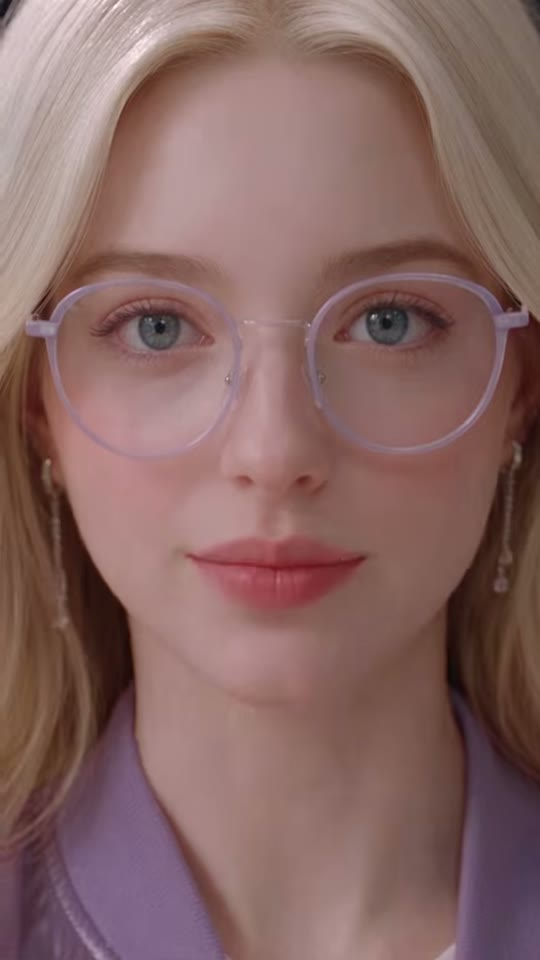
블론드 얼굴
입
샷ECU (눈~턱, 얼굴이 프레임 가득)앵글아이레벨, 렌즈 초근접(광각 왜곡 살짝)카메라고정구도눈 y≈20%, 입 y≈65%, 좌우 대칭. 안경테가 프레임 상단을 가로지름. 배경 없음(얼굴·머리카락만).동작a: 입을 크게 벌려 숨 들이킴 → m: 입술을 오므려 'I'm twenty' 또박또박 → z: 입 다물고 미소.대사블론드 팬: "I'm twenty."화면 자막"I'm twenty"(12.95~13.62) · 흰색(이 에피소드는 정답에 노랑 하이라이트 없음) · 세로 약 75%들어오는 전환하드컷(MS→ECU 점프, 정답 강조)효과음/음악BGM 없음역할정답 제시 — 입모양 초근접으로 발음 학습
1순위
seedance-2-5초근접 미세표정(눈 커짐·입모양) 최강, 원본 모델 추정
2순위
minimax-h3립싱크 대사 + 무료
3순위
kling-v3-omni입모양 정확도 백업
① 이미지 프롬프트 (원본 클론)Vertical 9:16 extreme close-up, eye-level, lens very close, a pretty young Caucasian woman about 20, long voluminous wavy platinum-blonde hair with a center part, blue-grey eyes, round transparent lilac-frame glasses, long crystal drop earrings, glossy lilac satin bomber jacket with tonal embroidered 'vkki' logo, white T-shirt, navy pleated mini skirt, white socks and white sneakers, holding a brown clipboard with a silver clip and a blue ballpoint pen, her face filling the whole frame from eyes to chin, round lilac glasses across the upper frame, mouth wide open mid-breath, soft glossy skin, photorealistic cinematic live-action still, glossy K-drama idol beauty aesthetic, retro-pop 1980s Americana 'Neon Showbiz' world, soft high-key diffused key light with gentle rim light, pastel-saturated colors, smooth dewy skin, shallow depth of field, 35mm-50mm lens look, subtle film grain, vertical 9:16, 608x1080
② 영상 프롬프트 (원본 클론)0.92 s, static. Exaggerated clear articulation for learners: "I'm twenty." Lip-sync, bright female voice, then closes lips into a soft smile. No music.
③ 동물 버전 이미지 프롬프트Vertical 9:16 extreme close-up, eye-level, Lulu, a photoreal anthropomorphic cream-white Ragdoll cat with long fluffy fur, bright blue eyes, round transparent lilac-frame glasses, crystal drop earrings on her ears, glossy lilac satin bomber jacket with tonal 'vkki' embroidery, white T-shirt, navy pleated mini skirt, white socks and sneakers, holding a brown clipboard and blue pen, her fluffy face filling the frame from eyes to chin, lilac glasses across the upper frame, mouth open mid-breath, photorealistic cinematic live-action still with photoreal anthropomorphic animal actors (real fur, real whiskers, human-sized, standing and gesturing like humans, expressive but not cartoon), same retro-pop 1980s Americana 'Neon Showbiz' world, soft high-key diffused key light with gentle rim light, pastel-saturated colors, shallow depth of field, 35mm-50mm lens look, subtle film grain, vertical 9:16, 608x1080
④ 동물 버전 영상 프롬프트0.92 s, static. Lulu's mouth articulates clearly: "I'm twenty." Lip-sync, whiskers move. No music.
네거티브extra fingers, fused or deformed hands, distorted face, asymmetrical eyes, warped or misspelled logo, random text, burned-in subtitles, captions, watermark, UI, blurry, low resolution, over-sharpened, plastic CGI skin, cartoon, anime, 3D toy look, heavy makeup, horizontal frame, letterbox bars, flicker, jitter, morphing props, duplicate characters, extra people in background, mouth out of sync || ANIMAL: extra fingers, fused or deformed hands, distorted face, asymmetrical eyes, warped or misspelled logo, random text, burned-in subtitles, captions, watermark, UI, blurry, low resolution, over-sharpened, plastic CGI skin, cartoon, anime, 3D toy look, heavy makeup, horizontal frame, letterbox bars, flicker, jitter, morphing props, duplicate characters, extra people in background, mouth out of sync, human face, human skin, hybrid human-animal face, realistic human hands on the animal, costume mascot suit, plush toy, stiff taxidermy look, uncanny fur
컷 9 · 따라 말하기(쉐도잉)
13.63s → 15.04s (1.42s)

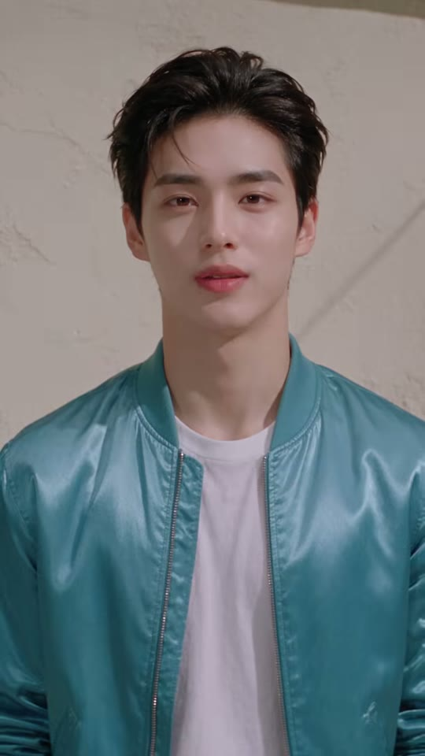
소년
양손
샷MCU (가슴 위)앵글아이레벨 정면, 카메라 직시카메라고정구도소년 중앙 대칭(얼굴 x≈50%, y≈22%), 양손이 하단 모서리에서 편안하게 펼쳐짐. 배경 크림 회벽.동작침착하게 눈을 감았다 뜨며 차분하게 따라 말함, 손을 편안히 펼침(깨달음·안도).대사소년: "I'm twenty."화면 자막"I'm twenty"(14.30~15.04) · 흰색 · 세로 약 48%들어오는 전환하드컷(핑퐁)효과음/음악BGM 없음, 13.6~14.2 짧은 정적역할따라 말하기(쉐도잉)
1순위
minimax-h3대사 립싱크+음성 동시 생성, 무료 — 팀 기본
2순위
kling-v3-omni레퍼런스 캐릭터 일관성 + 립싱크 안정
3순위
seedance-2-5원본 채널 #seedance25 사용 → 룩 최근접(추정)
① 이미지 프롬프트 (원본 클론)Vertical 9:16 medium close-up, eye-level frontal, symmetrical, a handsome Korean young man about 20 years old, tousled dark-brown textured idol hairstyle with soft bangs, fair dewy skin, wearing a glossy teal-turquoise satin bomber jacket with a pink rhinestone 'vkki' logo on his left chest, plain white crew-neck T-shirt, black belt, black trousers, black beaded bracelet on his right wrist, calm relieved expression, eyes half closed, both hands open at the bottom corners of the frame, a plain cream plaster wall with faint soft diagonal shadows behind him, photorealistic cinematic live-action still, glossy K-drama idol beauty aesthetic, retro-pop 1980s Americana 'Neon Showbiz' world, soft high-key diffused key light with gentle rim light, pastel-saturated colors, smooth dewy skin, shallow depth of field, 35mm-50mm lens look, subtle film grain, vertical 9:16, 608x1080
② 영상 프롬프트 (원본 클론)1.42 s, static. He closes his eyes, breathes, opens them and says calmly: "I'm twenty." Lip-sync, young male voice, relieved. No music.
③ 동물 버전 이미지 프롬프트Vertical 9:16 medium close-up, eye-level frontal, Hamzzi, a photoreal anthropomorphic golden-orange Syrian hamster with a cream belly, chubby cheek pouches, big glossy black eyes, pink nose and tiny pink hands, a fluffy fur tuft on the head styled like an idol haircut, human-sized and upright, wearing the same glossy teal satin bomber jacket with pink rhinestone 'vkki' logo, white T-shirt, black trousers and a black beaded bracelet, calm relieved expression, eyes half closed, tiny paws open at the bottom corners, a plain cream plaster wall with faint soft diagonal shadows behind him, photorealistic cinematic live-action still with photoreal anthropomorphic animal actors (real fur, real whiskers, human-sized, standing and gesturing like humans, expressive but not cartoon), same retro-pop 1980s Americana 'Neon Showbiz' world, soft high-key diffused key light with gentle rim light, pastel-saturated colors, shallow depth of field, 35mm-50mm lens look, subtle film grain, vertical 9:16, 608x1080
④ 동물 버전 영상 프롬프트1.42 s, static. Hamzzi closes his eyes, sighs, then says calmly: "I'm twenty." Lip-sync, small voice. No music.
네거티브extra fingers, fused or deformed hands, distorted face, asymmetrical eyes, warped or misspelled logo, random text, burned-in subtitles, captions, watermark, UI, blurry, low resolution, over-sharpened, plastic CGI skin, cartoon, anime, 3D toy look, heavy makeup, horizontal frame, letterbox bars, flicker, jitter, morphing props, duplicate characters, extra people in background, mouth out of sync || ANIMAL: extra fingers, fused or deformed hands, distorted face, asymmetrical eyes, warped or misspelled logo, random text, burned-in subtitles, captions, watermark, UI, blurry, low resolution, over-sharpened, plastic CGI skin, cartoon, anime, 3D toy look, heavy makeup, horizontal frame, letterbox bars, flicker, jitter, morphing props, duplicate characters, extra people in background, mouth out of sync, human face, human skin, hybrid human-animal face, realistic human hands on the animal, costume mascot suit, plush toy, stiff taxidermy look, uncanny fur
컷 10 · 해결 — 올바른 문장 = 팬클럽 가입 서명(보상)
15.04s → 16.79s (1.75s)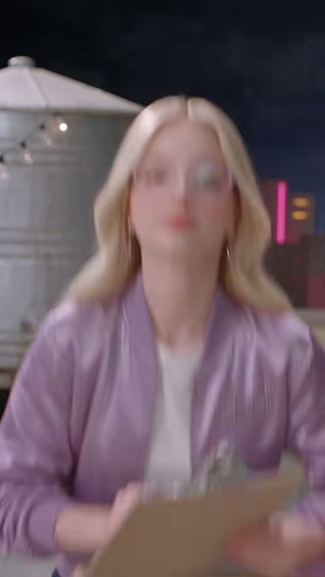

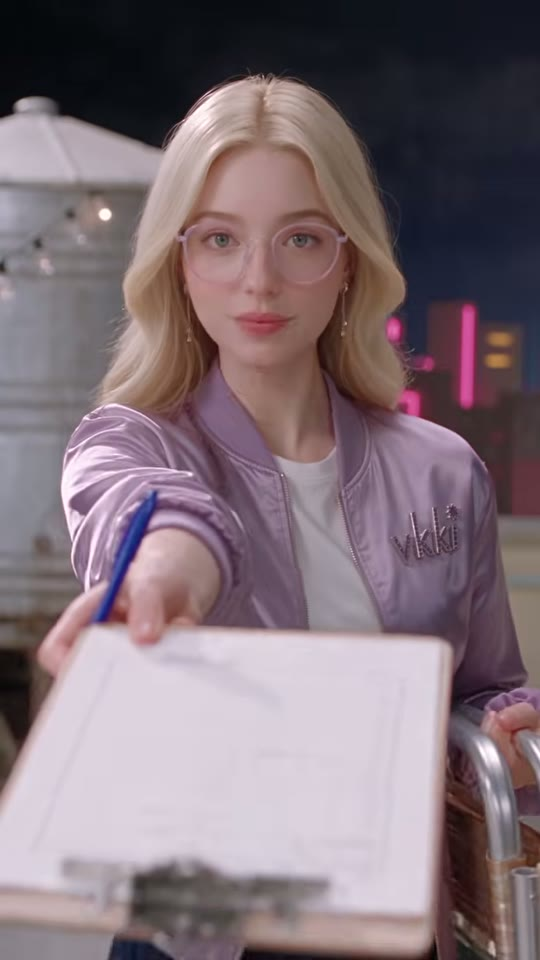
블론드 팬
클립보드
접힌 의자
샷MS→MCU (카메라 쪽으로 걸어옴)앵글아이레벨, 소년 POV카메라고정 카메라 + 인물이 다가오며 랙포커스(a 프레임 완전 아웃포커스 → m 선명)구도블론드 중앙(얼굴 x≈50%, y≈20%), 오른손 파란 펜, 왼손 클립보드, 오른쪽 허리에 접힌 의자. z에서 클립보드를 렌즈 앞(하단 x 20~90%, y 60~95%)으로 내밈.동작a: 흐릿하게 카메라로 걸어옴 → m: 초점 맞으며 만족스러운 미소 '…Perfect' → z: 클립보드와 펜을 카메라(소년)에게 내밀며 'Sign here'.대사블론드 팬: "…Perfect. Sign here."화면 자막"...Perfect"(15.45~15.85) → "Sign here"(15.85~16.79) · 흰색 · 세로 약 40~42%들어오는 전환하드컷효과음/음악BGM 없음. 16.81~17.20 무음(다음 컷 타이밍 비트)역할해결 — 올바른 문장 = 팬클럽 가입 서명(보상)
1순위
veo-3-1걸어 들어오며 초점이 맞는 랙포커스·카메라 쪽 클립보드 내밀기(깊이감) 재현
2순위
kling-v3보행+소품 내밀기 동작 안정
3순위
minimax-h3대사 립싱크 무료 대안
① 이미지 프롬프트 (원본 클론)Vertical 9:16 medium shot, eye-level POV, a pretty young Caucasian woman about 20, long voluminous wavy platinum-blonde hair with a center part, blue-grey eyes, round transparent lilac-frame glasses, long crystal drop earrings, glossy lilac satin bomber jacket with tonal embroidered 'vkki' logo, white T-shirt, navy pleated mini skirt, white socks and white sneakers, holding a brown clipboard with a silver clip and a blue ballpoint pen, walking toward the camera holding a blue pen, a folded a vintage aluminum folding lawn chair with green-and-white woven webbing hanging at her right side, content smile, blurred night rooftop background with a silver metal water tank at the left, pink and cyan neon skyline and warm string lights, deep navy sky, photorealistic cinematic live-action still, glossy K-drama idol beauty aesthetic, retro-pop 1980s Americana 'Neon Showbiz' world, soft high-key diffused key light with gentle rim light, pastel-saturated colors, smooth dewy skin, shallow depth of field, 35mm-50mm lens look, subtle film grain, vertical 9:16, 608x1080
② 영상 프롬프트 (원본 클론)1.75 s, static camera with rack focus: she steps from soft blur into sharp focus, smiles and says: "...Perfect." then pushes the clipboard and pen toward the lens: "Sign here." Lip-sync, bright pleased female voice. No music.
③ 동물 버전 이미지 프롬프트Vertical 9:16 medium shot, eye-level POV, Lulu, a photoreal anthropomorphic cream-white Ragdoll cat with long fluffy fur, bright blue eyes, round transparent lilac-frame glasses, crystal drop earrings on her ears, glossy lilac satin bomber jacket with tonal 'vkki' embroidery, white T-shirt, navy pleated mini skirt, white socks and sneakers, holding a brown clipboard and blue pen, walking toward the camera holding a blue pen, a folded a vintage aluminum folding lawn chair with green-and-white woven webbing at her side, pleased smile, blurred night rooftop background with a silver metal water tank at the left, pink and cyan neon skyline and warm string lights, deep navy sky, photorealistic cinematic live-action still with photoreal anthropomorphic animal actors (real fur, real whiskers, human-sized, standing and gesturing like humans, expressive but not cartoon), same retro-pop 1980s Americana 'Neon Showbiz' world, soft high-key diffused key light with gentle rim light, pastel-saturated colors, shallow depth of field, 35mm-50mm lens look, subtle film grain, vertical 9:16, 608x1080
④ 동물 버전 영상 프롬프트1.75 s, rack focus from blur to sharp as Lulu approaches: "...Perfect." then thrusts the clipboard toward the lens: "Sign here." Lip-sync, pleased female voice. No music.
네거티브extra fingers, fused or deformed hands, distorted face, asymmetrical eyes, warped or misspelled logo, random text, burned-in subtitles, captions, watermark, UI, blurry, low resolution, over-sharpened, plastic CGI skin, cartoon, anime, 3D toy look, heavy makeup, horizontal frame, letterbox bars, flicker, jitter, morphing props, duplicate characters, extra people in background, mouth out of sync || ANIMAL: extra fingers, fused or deformed hands, distorted face, asymmetrical eyes, warped or misspelled logo, random text, burned-in subtitles, captions, watermark, UI, blurry, low resolution, over-sharpened, plastic CGI skin, cartoon, anime, 3D toy look, heavy makeup, horizontal frame, letterbox bars, flicker, jitter, morphing props, duplicate characters, extra people in background, mouth out of sync, human face, human skin, hybrid human-animal face, realistic human hands on the animal, costume mascot suit, plush toy, stiff taxidermy look, uncanny fur
컷 11 · 펀치라인(시리즈 고정 오리발)
16.79s → 18.08s (1.29s)


누나
수화기
샷CU (얼굴~가슴)앵글아이레벨 정면, 카메라 직시카메라고정구도누나 중앙 대칭(눈 y≈33%), 수화기를 오른쪽 볼(화면 좌측)에 댐, 코일 코드 하단으로. 배경 핑크·노랑 진열장 보케.동작0.4초 무표정 정적 → 카메라 직시하며 태연하게 '…That's what I meant' 오리발.대사누나: "…That's what I meant."화면 자막"...That's what I meant"(16.95~18.08) · 흰색 · 세로 약 58.5%들어오는 전환하드컷 — 컷 직후 0.4초 무음(16.81~17.20)으로 '뻔뻔함' 타이밍효과음/음악BGM 없음역할펀치라인(시리즈 고정 오리발)
1순위
seedance-2-5초근접 미세표정(눈 커짐·입모양) 최강, 원본 모델 추정
2순위
minimax-h3립싱크 대사 + 무료
3순위
kling-v3-omni입모양 정확도 백업
① 이미지 프롬프트 (원본 클론)Vertical 9:16 close-up, eye-level, looking straight into the lens, a beautiful Korean woman in her mid-20s, long glossy wavy black hair with a center part, gold hoop earrings, white short-sleeve mandarin-collar shirt under a denim-blue bib apron with a tiny 'vkki' embroidery, holding a cream vintage telephone handset with a coiled cord to her ear, handset held to her right cheek, symmetrical, bokeh of pink and yellow shop shelves behind, straight innocent face, photorealistic cinematic live-action still, glossy K-drama idol beauty aesthetic, retro-pop 1980s Americana 'Neon Showbiz' world, soft high-key diffused key light with gentle rim light, pastel-saturated colors, smooth dewy skin, shallow depth of field, 35mm-50mm lens look, subtle film grain, vertical 9:16, 608x1080
② 영상 프롬프트 (원본 클론)1.29 s, static. A 0.4 s deadpan pause, then she says innocently into the lens: "...That's what I meant." Lip-sync, warm female voice, deadpan. No music.
③ 동물 버전 이미지 프롬프트Vertical 9:16 close-up, eye-level into the lens, Noona-cat, an elegant photoreal anthropomorphic long-haired black cat (Persian mix) with glossy flowing black fur parted in the middle like long hair, warm amber eyes, small gold hoop earrings on her ears, wearing a white short-sleeve mandarin-collar shirt and a denim-blue bib apron with tiny 'vkki' embroidery, holding a cream coiled-cord telephone handset to her ear with her paw, handset to her cheek, symmetrical, pink and yellow shelf bokeh, innocent deadpan face, photorealistic cinematic live-action still with photoreal anthropomorphic animal actors (real fur, real whiskers, human-sized, standing and gesturing like humans, expressive but not cartoon), same retro-pop 1980s Americana 'Neon Showbiz' world, soft high-key diffused key light with gentle rim light, pastel-saturated colors, shallow depth of field, 35mm-50mm lens look, subtle film grain, vertical 9:16, 608x1080
④ 동물 버전 영상 프롬프트1.29 s, static. Noona-cat blinks slowly (0.4 s pause), then deadpans: "...That's what I meant." Lip-sync. No music.
네거티브extra fingers, fused or deformed hands, distorted face, asymmetrical eyes, warped or misspelled logo, random text, burned-in subtitles, captions, watermark, UI, blurry, low resolution, over-sharpened, plastic CGI skin, cartoon, anime, 3D toy look, heavy makeup, horizontal frame, letterbox bars, flicker, jitter, morphing props, duplicate characters, extra people in background, mouth out of sync || ANIMAL: extra fingers, fused or deformed hands, distorted face, asymmetrical eyes, warped or misspelled logo, random text, burned-in subtitles, captions, watermark, UI, blurry, low resolution, over-sharpened, plastic CGI skin, cartoon, anime, 3D toy look, heavy makeup, horizontal frame, letterbox bars, flicker, jitter, morphing props, duplicate characters, extra people in background, mouth out of sync, human face, human skin, hybrid human-animal face, realistic human hands on the animal, costume mascot suit, plush toy, stiff taxidermy look, uncanny fur
컷 12 · 후일담/루프 — 하드컷 종료로 첫 컷 전화 장면과 연결
18.08s → 19.85s (1.77s)

소년
블론드 팬
접힌 의자
샷WS (샷5와 동일 옥상 셋업)앵글아이레벨 약간 하이카메라고정구도샷5와 동일 원근. 소년 좌측(x≈18~38%)이 허리 숙여 클립보드에 서명, 블론드 우측(x≈58~80%)이 접힌 의자를 몸 앞에 세워 들고 서 있음. 벽 전화 좌측.동작소년이 몸을 숙여 클립보드에 서명, 블론드는 의자를 다시 접어 들고 기다림(의자가 접혀 '어르신 대접' 끝).대사(대사 없음)화면 자막자막 없음들어오는 전환하드컷(와이드 복귀)효과음/음악펜 사각 소리(추정), 밤 룸톤. 페이드 없이 종료(마지막 1초 밝기 일정 YAVG≈91)역할후일담/루프 — 하드컷 종료로 첫 컷 전화 장면과 연결
1순위
kling-v3접이식 의자 펼치기/접기 같은 소품 물리 동작 안정
2순위
veo-3-1와이드 환경+효과음 동시 생성
3순위
hailuo-2-3과장된 코믹 동작 템포
① 이미지 프롬프트 (원본 클론)Vertical 9:16 wide shot, eye-level slightly high, night rooftop set: a cream stucco parapet wall on the left with a beige wall-mounted payphone and coiled cord, a string of warm Edison bulbs overhead, a glowing pink and cyan neon-outline city skyline behind a low parapet, deep navy night sky, pale grey gravel rooftop floor, a handsome Korean young man about 20 years old, tousled dark-brown textured idol hairstyle with soft bangs, fair dewy skin, wearing a glossy teal-turquoise satin bomber jacket with a pink rhinestone 'vkki' logo on his left chest, plain white crew-neck T-shirt, black belt, black trousers, black beaded bracelet on his right wrist bending forward signing a clipboard held out by a pretty young Caucasian woman about 20, long voluminous wavy platinum-blonde hair with a center part, blue-grey eyes, round transparent lilac-frame glasses, long crystal drop earrings, glossy lilac satin bomber jacket with tonal embroidered 'vkki' logo, white T-shirt, navy pleated mini skirt, white socks and white sneakers, holding a brown clipboard with a silver clip and a blue ballpoint pen, who holds a folded a vintage aluminum folding lawn chair with green-and-white woven webbing upright in front of her legs, payphone on the wall at the left, photorealistic cinematic live-action still, glossy K-drama idol beauty aesthetic, retro-pop 1980s Americana 'Neon Showbiz' world, soft high-key diffused key light with gentle rim light, pastel-saturated colors, smooth dewy skin, shallow depth of field, 35mm-50mm lens look, subtle film grain, vertical 9:16, 608x1080
② 영상 프롬프트 (원본 클론)1.77 s, locked-off wide. He leans over and signs the clipboard; she waits holding the folded chair, gently swaying. No dialogue, pen scratch, night ambience, hard end.
③ 동물 버전 이미지 프롬프트Vertical 9:16 wide shot, eye-level slightly high, night rooftop set: a cream stucco parapet wall on the left with a beige wall-mounted payphone and coiled cord, a string of warm Edison bulbs overhead, a glowing pink and cyan neon-outline city skyline behind a low parapet, deep navy night sky, pale grey gravel rooftop floor, Hamzzi, a photoreal anthropomorphic golden-orange Syrian hamster with a cream belly, chubby cheek pouches, big glossy black eyes, pink nose and tiny pink hands, a fluffy fur tuft on the head styled like an idol haircut, human-sized and upright, wearing the same glossy teal satin bomber jacket with pink rhinestone 'vkki' logo, white T-shirt, black trousers and a black beaded bracelet bending forward signing a clipboard held by Lulu, a photoreal anthropomorphic cream-white Ragdoll cat with long fluffy fur, bright blue eyes, round transparent lilac-frame glasses, crystal drop earrings on her ears, glossy lilac satin bomber jacket with tonal 'vkki' embroidery, white T-shirt, navy pleated mini skirt, white socks and sneakers, holding a brown clipboard and blue pen, who holds a folded a vintage aluminum folding lawn chair with green-and-white woven webbing upright, payphone at the left, photorealistic cinematic live-action still with photoreal anthropomorphic animal actors (real fur, real whiskers, human-sized, standing and gesturing like humans, expressive but not cartoon), same retro-pop 1980s Americana 'Neon Showbiz' world, soft high-key diffused key light with gentle rim light, pastel-saturated colors, shallow depth of field, 35mm-50mm lens look, subtle film grain, vertical 9:16, 608x1080
④ 동물 버전 영상 프롬프트1.77 s, locked-off wide. Hamzzi signs with a tiny paw, Lulu waits holding the folded chair, tail swishing. No dialogue, hard end.
네거티브extra fingers, fused or deformed hands, distorted face, asymmetrical eyes, warped or misspelled logo, random text, burned-in subtitles, captions, watermark, UI, blurry, low resolution, over-sharpened, plastic CGI skin, cartoon, anime, 3D toy look, heavy makeup, horizontal frame, letterbox bars, flicker, jitter, morphing props, duplicate characters, extra people in background, mouth out of sync || ANIMAL: extra fingers, fused or deformed hands, distorted face, asymmetrical eyes, warped or misspelled logo, random text, burned-in subtitles, captions, watermark, UI, blurry, low resolution, over-sharpened, plastic CGI skin, cartoon, anime, 3D toy look, heavy makeup, horizontal frame, letterbox bars, flicker, jitter, morphing props, duplicate characters, extra people in background, mouth out of sync, human face, human skin, hybrid human-animal face, realistic human hands on the animal, costume mascot suit, plush toy, stiff taxidermy look, uncanny fur
✂️ 편집 키트
타임라인0.00 옥상 전화 질문 → 2.83 누나 오답 'have'(빨강) → 4.63 소년 CU 선언 → 5.67 블론드 CU '20년 경력?' → 8.46 무대사 와이드 의자 대접 리빌 → 10.88 'No, no! My age!' → 12.21 'Then say —'(0.5초) → 12.71 ECU 'I'm twenty' → 13.63 소년 복창 → 15.04 블론드 접근 'Perfect. Sign here' → 16.79 누나 오리발 → 18.08 와이드 서명(무대사) → 19.85 하드컷 종료. 전환 효과 0개.
FFmpeg 명령# ===== vkki EP.2 'I'm Twenty' 1:1 클론 편집 (Git Bash, 창 안 뜸: -nostdin, 현재 셸 실행) =====
# 준비: raw/s01.mp4 ~ raw/s12.mp4 (샷별 생성본, 립싱크 음성 포함), vk_92NiKxs1yVc.ass(아래 ass_subtitle 저장), 폰트 Montserrat SemiBold 설치
mkdir -p work && cd work
# 1) 샷 정규화 + 실측 길이 트림(부족분은 마지막 프레임 복제·무음 패딩)
i=1
for d in 2.833 1.792 1.042 2.791 2.417 1.333 0.500 0.917 1.417 1.750 1.291 1.770; do
n=$(printf %02d $i)
ffmpeg -y -nostdin -v error -i ../raw/s$n.mp4 -t $d \
-vf "scale=608:1080:force_original_aspect_ratio=increase,crop=608:1080,fps=24,setsar=1,tpad=stop_mode=clone:stop_duration=2,format=yuv420p" \
-af "aresample=44100,aformat=sample_fmts=fltp:channel_layouts=stereo,apad" \
-c:v libx264 -preset slow -crf 16 -c:a aac -b:a 192k s$n.mp4
i=$((i+1))
done
# 2) 하드컷 concat (전환효과 없음)
for n in $(seq -w 1 12); do echo "file 's$n.mp4'"; done > list.txt
ffmpeg -y -nostdin -v error -f concat -safe 0 -i list.txt -c copy joined.mp4
# 3) (선택) 효과음: 의자 펼치기 8.80s, 펜 사각 18.40s
ffmpeg -y -nostdin -v error -i joined.mp4 -i ../sfx/chair_clack.wav -i ../sfx/pen_scratch.wav -filter_complex \
"[1:a]adelay=8800|8800,volume=0.8[a1];[2:a]adelay=18400|18400,volume=0.4[a2];[0:a][a1][a2]amix=inputs=3:duration=first:normalize=0[a]" \
-map 0:v -map "[a]" -c:v copy -c:a aac -b:a 192k joined_sfx.mp4
# 4) 자막(have=빨강) + 'AI video and voice.' 워터마크 burn-in + 원본 라우드니스 -16.1 LUFS
ffmpeg -y -nostdin -v error -i joined_sfx.mp4 -vf "ass=vk_92NiKxs1yVc.ass" \
-af "loudnorm=I=-16.1:TP=-1.5:LRA=8" -r 24 -c:v libx264 -preset slow -crf 17 -pix_fmt yuv420p \
-c:a aac -b:a 192k -ar 44100 -movflags +faststart vk_92NiKxs1yVc_clone.mp4
# 5) (동물판/업로드용 옵션) 약한 BGM + 대사 덕킹 + -14 LUFS ※원본은 BGM 없음
ffmpeg -y -nostdin -v error -i vk_92NiKxs1yVc_clone.mp4 -stream_loop -1 -i ../bgm/neon_night.mp3 -filter_complex \
"[0:a]asplit=2[vo][sc];[1:a]atrim=0:19.853,asetpts=PTS-STARTPTS,volume=0.18[bg];[bg][sc]sidechaincompress=threshold=0.02:ratio=10:attack=15:release=350[duck];[vo][duck]amix=inputs=2:duration=first:normalize=0,loudnorm=I=-14:TP=-1.5:LRA=7[a]" \
-map 0:v -map "[a]" -c:v copy -c:a aac -b:a 192k vk_92NiKxs1yVc_bgm.mp4
# ※ 원본 엔딩 페이드 없음(하드컷). 필요 시 4)의 -vf 끝에 ,fade=t=out:st=19.35:d=0.5
ASS 자막 스타일[Script Info]
ScriptType: v4.00+
PlayResX: 608
PlayResY: 1080
WrapStyle: 0
ScaledBorderAndShadow: yes
[V4+ Styles]
Format: Name, Fontname, Fontsize, PrimaryColour, SecondaryColour, OutlineColour, BackColour, Bold, Italic, Underline, StrikeOut, ScaleX, ScaleY, Spacing, Angle, BorderStyle, Outline, Shadow, Alignment, MarginL, MarginR, MarginV, Encoding
Style: Cap,Montserrat SemiBold,32,&H00FFFFFF,&H00FFFFFF,&H50000000,&H78000000,-1,0,0,0,100,100,0.3,0,1,0.8,1.6,5,30,30,0,1
Style: WM,Inter,13,&H70FFFFFF,&H70FFFFFF,&H00000000,&H00000000,0,0,0,0,100,100,0,0,1,0,0,5,0,0,0,1
[Events]
Format: Layer, Start, End, Style, Name, MarginL, MarginR, MarginV, Effect, Text
Dialogue: 0,0:00:00.00,0:00:19.85,WM,,0,0,0,,{\pos(304,858)}AI video and voice.
Dialogue: 1,0:00:00.00,0:00:00.95,Cap,,0,0,0,,{\pos(357,470)}Noona —
Dialogue: 1,0:00:00.95,0:00:01.45,Cap,,0,0,0,,{\pos(336,466)}my age...
Dialogue: 1,0:00:01.45,0:00:01.95,Cap,,0,0,0,,{\pos(340,472)}twenty...
Dialogue: 1,0:00:01.95,0:00:02.83,Cap,,0,0,0,,{\pos(339,482)}what do I say?
Dialogue: 1,0:00:02.95,0:00:03.40,Cap,,0,0,0,,{\pos(322,511)}Hmm...
Dialogue: 1,0:00:03.40,0:00:04.62,Cap,,0,0,0,,{\pos(316,511)}"I {\c&H2828F5&}have{\c&HFFFFFF&} twenty years"
Dialogue: 1,0:00:04.75,0:00:05.67,Cap,,0,0,0,,{\pos(288,533)}I {\c&H2828F5&}have{\c&HFFFFFF&} twenty years!
Dialogue: 1,0:00:06.40,0:00:07.30,Cap,,0,0,0,,{\pos(318,687)}Twenty years...
Dialogue: 1,0:00:07.30,0:00:08.45,Cap,,0,0,0,,{\pos(304,708)}of experience?
Dialogue: 1,0:00:10.90,0:00:11.40,Cap,,0,0,0,,{\pos(318,571)}No, no!
Dialogue: 1,0:00:11.40,0:00:12.21,Cap,,0,0,0,,{\pos(320,596)}My age!
Dialogue: 1,0:00:12.21,0:00:12.71,Cap,,0,0,0,,{\pos(316,460)}Then say —
Dialogue: 1,0:00:12.95,0:00:13.62,Cap,,0,0,0,,{\pos(316,810)}I'm twenty
Dialogue: 1,0:00:14.30,0:00:15.04,Cap,,0,0,0,,{\pos(328,517)}I'm twenty
Dialogue: 1,0:00:15.45,0:00:15.85,Cap,,0,0,0,,{\pos(330,436)}...Perfect
Dialogue: 1,0:00:15.85,0:00:16.79,Cap,,0,0,0,,{\pos(292,457)}Sign here
Dialogue: 1,0:00:16.95,0:00:18.08,Cap,,0,0,0,,{\pos(304,632)}...That's what I meant
HyperFrames 편집 프롬프트 (Claude에 그대로 붙여넣기)HyperFrames로 608x1080 · 24fps · 총 19853ms 세로 쇼츠를 만들어줘. 샷 클립 12개(s01~s12.mp4)를 아래 타이밍에 '하드컷'으로만 이어붙이고(전환·줌·페이드 금지), 자막은 화자 얼굴 근처에 앵커해줘.
[컷 타이밍 ms] s01 0–2833 / s02 2833–4625 / s03 4625–5667 / s04 5667–8458 / s05 8458–10875 / s06 10875–12208 / s07 12208–12708(0.5초 초단컷) / s08 12708–13625 / s09 13625–15042 / s10 15042–16792 / s11 16792–18083 / s12 18083–19853
[자막 스타일] Montserrat SemiBold 32px(608폭 기준), 흰색 #FFFFFF, 박스 없음, 외곽선 0.8px + 드롭섀도(검정 50%, 1.6px). 등장·퇴장 애니메이션 없음(0ms 즉시 교체). 중심 정렬.
[키워드 색] 틀린 단어 'have'만 #F52828(빨강). 정답 'I'm twenty'는 흰색 그대로(이 에피소드는 노랑 없음).
[자막 큐 ms · 위치(가로%,세로%)] 0–950 'Noona —'(59,43.5) / 950–1450 'my age...'(55,43) / 1450–1950 'twenty...'(56,43.7) / 1950–2833 'what do I say?'(56,44.7) / 2950–3400 'Hmm...'(53,47.3) / 3400–4620 '"I [have] twenty years"'(52,47.3) / 4750–5667 'I [have] twenty years!'(47,49.4) / 6400–7300 'Twenty years...'(52,63.6) / 7300–8450 'of experience?'(50,65.6) / 8458–10875 자막 없음 / 10900–11400 'No, no!'(52,52.9) / 11400–12208 'My age!'(53,55.2) / 12208–12708 'Then say —'(52,42.6) / 12950–13620 'I'm twenty'(52,75) / 14300–15042 'I'm twenty'(54,47.9) / 15450–15850 '...Perfect'(54,40.4) / 15850–16792 'Sign here'(48,42.3) / 16950–18083 '...That's what I meant'(50,58.5) / 18083–19853 자막 없음
[워터마크] 'AI video and voice.' Inter Regular 13px, 흰색 44% 불투명, 가로 중앙 세로 79.5%(y=858px), 0–19853ms 상시.
[오디오] 클립 내장 립싱크 음성 사용, BGM 없음. 효과음: 8800ms 접이식 의자 '철컥', 18400ms 펜 사각. 16792~17200ms는 무음 유지(오리발 타이밍). 마스터 -16.1 LUFS(업로드용 -14).
[엔딩] 19853ms 하드컷 종료(페이드 없음).
수정 가능 범위: 새 HyperFrames 프로젝트 폴더 내부만. 승인 전 기존 파일 수정 금지.
✅ 똑같이 만들기 체크리스트
- 샷 12개·실측 길이(2.83/1.79/1.04/2.79/2.42/1.33/0.50/0.92/1.42/1.75/1.29/1.77s), 전부 하드컷
- 샷7은 정확히 0.5초(12 프레임) — 가속 리듬의 핵심, 늘리지 말 것
- 와이드(5·12)는 동일 옥상 셋업: 좌측 크림 벽 사선+공중전화, 전구 줄, 네온 스카이라인, 회색 자갈 바닥 하단 절반
- 소년 CU(3·6·9)는 옥상이 아닌 크림 회벽 배경 — 원본도 배경 불일치(스튜디오 느낌) 그대로
- 블론드 소품 연속성: 클립보드+파란 펜 상시, 샷5에서 의자 펼침 → 샷10·12에서 접힌 의자 소지
- 자막: 'have'만 빨강 #F52828, 정답은 흰색, 박스 없음, 화자 옆 위치, 무애니메이션
- 샷5·12는 자막·대사 없음(시각 개그만) — 자막 넣지 말 것
- 하단 79.5% 'AI video and voice.' 워터마크 상시, BGM 없음, 마스터 -16.1 LUFS
- 누나 엔딩 전 0.4초 무음 비트 유지
🐹 동물 버전 기획EP.11과 같은 동물 캐스트 유지: 소년→햄스터 '햄찌'(틸 새틴 봄버), 누나→긴 털 검은 고양이 'Noona-cat'(데님 앞치마·골드 후프), 블론드 팬→크림색 랙돌 고양이 'Lulu'(라일락 안경·라일락 봄버·클립보드). 동물은 사람 크기 직립 실사 털로 만들어 구도·박스·세트(밤 옥상/크림 회벽/캔디숍)·조명·자막·타이밍을 100% 유지. 바꿀 것: 얼굴·손발·목소리 톤, 리액션 디테일(샷4 동공 확장·귀 쫑긋, 샷5 햄찌 귀 납작, 샷6 볼 흔들림). 추가 개그 옵션: 샷5에서 Lulu가 햄찌용 미니 접이식 의자를 펼치는 크기 대비 개그(의자가 햄찌에게 너무 큼). 그대로 둘 것: 대사 원문, 'have' 빨강, 0.5초 초단컷, 무대사 와이드 2컷, 누나 오리발 엔딩, 무BGM(선택적 아주 약한 시티팝).
전체 프레임 시트 보기 (타임코드 포함)
전체 흐름
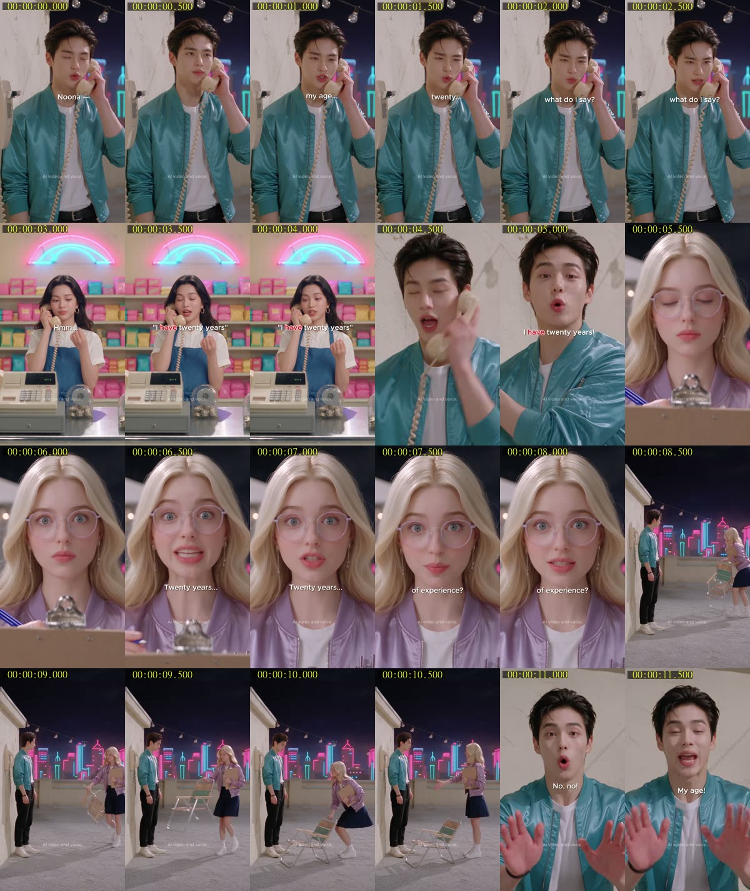
전체 흐름